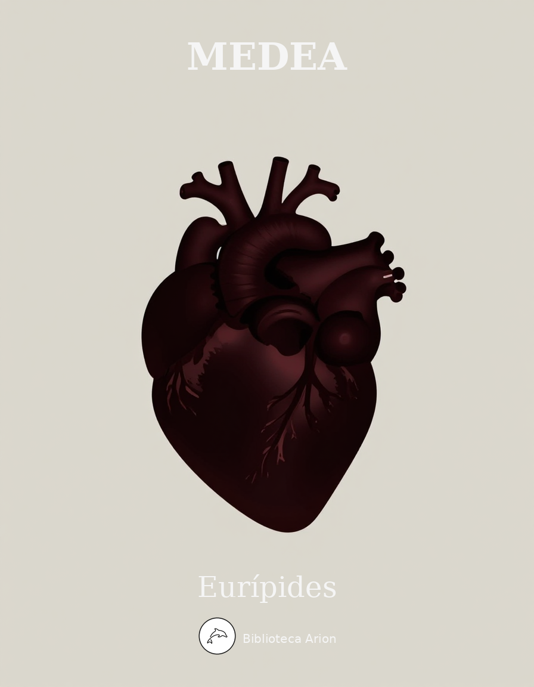

Medea
Μήδεια
Tragèdia grega sobre Medea, princesa de la Còlquida, que es venja de Jàson després que aquest l'abandoni per casar-se amb la filla del rei de Corint. Una de les obres més poderoses del teatre antic sobre la passió, la traïció i la venjança.
Autor: Εὐριπίδης (Eurípides) Font: Wikisource (el) Llengua: grec antic
ΤΡΟΦΟΣ
Εἴθ’ ὤφελ’ Ἀργοῦς μὴ διαπτάσθαι σκάφος
Κόλχων ἐς αἶαν κυανέας Συμπληγάδας,
μηδ’ ἐν νάπαισι Πηλίου πεσεῖν ποτε
τμηθεῖσα πεύκη, μηδ’ ἐρετμῶσαι χέρας
ἀνδρῶν ἀρίστων. οἳ τὸ πάγχρυσον δέρας 5
Πελίᾳ μετῆλθον. οὐ γὰρ ἂν δέσποιν’ ἐμὴ
Μήδεια πύργους γῆς ἔπλευσ’ Ἰωλκίας
ἔρωτι θυμὸν ἐκπλαγεῖσ’ Ἰάσονος·
οὐδ’ ἂν κτανεῖν πείσασα Πελιάδας κόρας
πατέρα κατῴκει τήνδε γῆν Κορινθίαν 10
ξὺν ἀνδρὶ καὶ τέκνοισιν, ἁνδάνουσα μὲν
φυγῇ πολιτῶν ὧν ἀφίκετο χθόνα,
αὐτή τε πάντα ξυμφέρουσ’ Ἰάσονι·
ἥπερ μεγίστη γίγνεται σωτηρία,
ὅταν γυνὴ πρὸς ἄνδρα μὴ διχοστατῇ. 15
νῦν δ’ ἐχθρὰ πάντα, καὶ νοσεῖ τὰ φίλτατα.
προδοὺς γὰρ αὑτοῦ τέκνα δεσπότιν τ’ ἐμὴν
γάμοις Ἰάσων βασιλικοῖς εὐνάζεται,
γήμας Κρέοντος παῖδ’, ὃς αἰσυμνᾷ χθονός·
Μήδεια δ’ ἡ δύστηνος ἠτιμασμένη 20
βοᾷ μὲν ὅρκους, ἀνακαλεῖ δὲ δεξιάς,
πίστιν μεγίστην, καὶ θεοὺς μαρτύρεται
οἵας ἀμοιβῆς ἐξ Ἰάσονος κυρεῖ.
κεῖται δ’ ἄσιτος, σῶμ’ ὑφεῖσ’ ἀλγηδόσι,
τὸν πάντα συντήκουσα δακρύοις χρόνον, 25
ἐπεὶ πρὸς ἀνδρὸς ᾔσθετ’ ἠδικημένη,
οὔτ’ ὄμμ’ ἐπαίρουσ’ οὔτ’ ἀπαλλάσσουσα γῆς
πρόσωπον· ὡς δὲ πέτρος ἢ θαλάσσιος
κλύδων ἀκούει νουθετουμένη φίλων·
ἢν μή ποτε στρέψασα πάλλευκον δέρην 30
αὐτὴ πρὸς αὑτὴν πατέρ’ ἀποιμώξῃ φίλον
καὶ γαῖαν οἴκους θ’, οὓς προδοῦσ’ ἀφίκετο
μετ’ ἀνδρὸς ὅς σφε νῦν ἀτιμάσας ἔχει.
ἔγνωκε δ’ ἡ τάλαινα συμφορᾶς ὕπο
οἷον πατρῴας μὴ ἀπολείπεσθαι χθονός. 35
στυγεῖ δὲ παῖδας οὐδ’ ὁρῶσ’ εὐφραίνεται.
δέδοικα δ’ αὐτὴν μή τι βουλεύσῃ νέον·
βαρεῖα γὰρ φρήν, οὐδ’ ἀνέξεται κακῶς
πάσχουσ’· ἐγᾦδα τήνδε, δειμαίνω τέ νιν
μὴ θηκτὸν ὤσῃ φάσγανον δι’ ἥπατος, 40
σιγῇ δόμους εἰσβᾶσ’, ἵν’ ἔστρωται λέχος,
ἢ καὶ τύραννον τόν τε γήμαντα κτάνῃ,
κἄπειτα μείζω συμφορὰν λάβῃ τινά.
δεινὴ γάρ· οὔτοι ῥᾳδίως γε συμβαλὼν
ἔχθραν τις αὐτῇ καλλίνικον οἴσεται. 45
ἀλλ’ οἵδε παῖδες ἐκ τρόχων πεπαυμένοι
στείχουσι, μητρὸς οὐδὲν ἐννοούμενοι
κακῶν· νέα γὰρ φροντὶς οὐκ ἀλγεῖν φιλεῖ.
ΠΑΙΔΑΓΩΓΟΣ
παλαιὸν οἴκων κτῆμα δεσποίνης ἐμῆς,
τί πρὸς πύλαισι τήνδ’ ἄγουσ’ ἐρημίαν 50
ἕστηκας, αὐτὴ θρεομένη σαυτῇ κακά;
πῶς σοῦ μόνη Μήδεια λείπεσθαι θέλει;
Τρ. τέκνων ὀπαδὲ πρέσβυ τῶν Ἰάσονος,
χρηστοῖσι δούλοις ξυμφορὰ τὰ δεσποτῶν
κακῶς πίτνοντα, καὶ φρενῶν ἀνθάπτεται. 55
ἐγὼ γὰρ ἐς τοῦτ’ ἐκβέβηκ’ ἀλγηδόνος,
ὥσθ’ ἵμερός μ’ ὑπῆλθε γῇ τε κοὐρανῷ
λέξαι μολούσῃ δεῦρο δεσποίνης τύχας.
Πα. οὔπω γὰρ ἡ τάλαινα παύεται γόων;
Τρ. ζηλῶ σ’· ἐν ἀρχῇ πῆμα κοὐδέπω μεσοῖ. 60
Πα. ὦ μῶρος—εἰ χρὴ δεσπότας εἰπεῖν τόδε·
ὡς οὐδὲν οἶδε τῶν νεωτέρων κακῶν.
Τρ. τί δ’ ἔστιν, ὦ γεραιέ; μὴ φθόνει φράσαι.
Πα. οὐδέν· μετέγνων καὶ τὰ πρόσθ’ εἰρημένα.
Τρ. μή, πρὸς γενείου, κρύπτε σύνδουλον σέθεν· 65
σιγὴν γάρ, εἰ χρή, τῶνδε θήσομαι πέρι.
Πα. ἤκουσά του λέγοντος, οὐ δοκῶν κλύειν,
πεσσοὺς προσελθών, ἔνθα δὴ παλαίτατοι
θάσσουσι, σεμνὸν ἀμφὶ Πειρήνης ὕδωρ,
ὡς τούσδε παῖδας γῆς ἐλᾶν Κορινθίας 70
σὺν μητρὶ μέλλοι τῆσδε κοίρανος χθονὸς
Κρέων. ὁ μέντοι μῦθος εἰ σαφὴς ὅδε
οὐκ οἶδα· βουλοίμην δ’ ἂν οὐκ εἶναι τόδε.
Τρ. καὶ ταῦτ’ Ἰάσων παῖδας ἐξανέξεται
πάσχοντας, εἰ καὶ μητρὶ διαφορὰν ἔχει; 75
Πα. παλαιὰ καινῶν λείπεται κηδευμάτων,
κοὐκ ἔστ’ ἐκεῖνος τοῖσδε δώμασιν φίλος.
Τρ. ἀπωλόμεσθ’ ἄρ’, εἰ κακὸν προσοίσομεν
νέον παλαιῷ, πρὶν τόδ’ ἐξηντληκέναι.
Πα. ἀτὰρ σύ γ’—οὐ γὰρ καιρὸς εἰδέναι τόδε 80
δέσποιναν—ἡσύχαζε καὶ σίγα λόγον.
Τρ. ὦ τέκν’, ἀκούεθ’ οἷος εἰς ὑμᾶς πατήρ;
ὄλοιτο μὲν μή· δεσπότης γάρ ἐστ’ ἐμός·
ἀτὰρ κακός γ’ ὢν ἐς φίλους ἁλίσκεται.
Πα. τίς δ’ οὐχὶ θνητῶν; ἄρτι γιγνώσκεις τόδε, 85
ὡς πᾶς τις αὑτὸν τοῦ πέλας μᾶλλον φιλεῖ,
οἳ μὲν δικαίως, οἳ δὲ καὶ κέρδους χάριν,
εἰ τούσδε γ’ εὐνῆς οὕνεκ’ οὐ στέργει πατήρ.
Τρ. ἴτ’—εὖ γὰρ ἔσται—δωμάτων ἔσω, τέκνα.
σὺ δ’ ὡς μάλιστα τούσδ’ ἐρημώσας ἔχε 90
καὶ μὴ πέλαζε μητρὶ δυσθυμουμένῃ.
ἤδη γὰρ εἶδον ὄμμα νιν ταυρουμένην
τοῖσδ’, ὥς τι δρασείουσαν· οὐδὲ παύσεται
χόλου, σάφ’ οἶδα, πρὶν κατασκῆψαί τινα . . .
ἐχθρούς γε μέντοι, μὴ φίλους, δράσειέ τι. 95
ΜΗΔΕΙΑ <ἔνδοθεν>
ἰώ,
δύστανος ἐγὼ μελέα τε πόνων,
ἰώ μοί μοι, πῶς ἂν ὀλοίμαν;
Τρ. τόδ’ ἐκεῖνο, φίλοι παῖδες· μήτηρ
κινεῖ κραδίαν, κινεῖ δὲ χόλον.
σπεύσατε θᾶσσον δώματος εἴσω 100
καὶ μὴ πελάσητ’ ὄμματος ἐγγύς,
μηδὲ προσέλθητ’, ἀλλὰ φυλάσσεσθ’
ἄγριον ἦθος στυγεράν τε φύσιν
φρενὸς αὐθάδους.—
ἴτε νῦν, χωρεῖθ’ ὡς τάχος εἴσω.— 105
δῆλον δ’ ἀρχῆς ἐξαιρόμενον
νέφος οἰμωγῆς ὡς τάχ’ ἀνάψει
μείζονι θυμῷ· τί ποτ’ ἐργάσεται
μεγαλόσπλαγχνος δυσκατάπαυστος
ψυχὴ δηχθεῖσα κακοῖσιν; 110
Μη. αἰαῖ,
ἔπαθον τλάμων ἔπαθον μεγάλων
ἄξι’ ὀδυρμῶν· ὦ κατάρατοι
παῖδες ὄλοισθε στυγερᾶς ματρὸς
σὺν πατρί, καὶ πᾶς δόμος ἔῤῥοι.
Τρ. ἰώ μοί μοι, ἰὼ τλήμων. 115
τί δέ σοι παῖδες πατρὸς ἀμπλακίας
μετέχουσι; τί τούσδ’ ἔχθεις; οἴμοι,
τέκνα, μή τι πάθηθ’ ὡς ὑπεραλγῶ.
δεινὰ τυράννων λήματα καί πως
ὀλίγ’ ἀρχόμενοι, πολλὰ κρατοῦντες 120
χαλεπῶς ὀργὰς μεταβάλλουσιν.
τὸ γὰρ εἰθίσθαι ζῆν ἐπ’ ἴσοισιν
κρεῖσσον· ἐμοὶ γοῦν ἐν μὴ μεγάλοις
ὀχυρῶς γ’ εἴη καταγηράσκειν.
τῶν γὰρ μετρίων πρῶτα μὲν εἰπεῖν 125
τοὔνομα νικᾷ, χρῆσθαί τε μακρῷ
λῷστα βροτοῖσιν· τὰ δ’ ὑπερβάλλοντ’
οὐδένα καιρὸν δύναται θνητοῖς·
μείζους δ’ ἄτας, ὅταν ὀργισθῇ
δαίμων οἴκοις, ἀπέδωκεν. 130
ΧΟΡΟΣ
ἔκλυον φωνάν, ἔκλυον δὲ βοὰν
τᾶς δυστάνου Κολχίδος, οὐδέ πω
ἤπιος· ἀλλ’ ὦ γηραιά,
λέξον· ἐπ’ ἀμφιπύλου γὰρ ἔσω μελάθρου βοὰν
ἔκλυον· οὐδὲ συνήδομαι, ὦ γύναι, ἄλγεσιν
δώματος· ἐπεί μοι φίλον κέκρανται.
Τρ. οὐκ εἰσὶ δόμοι· φροῦδα τάδ’ ἤδη.
τὸν μὲν γὰρ ἔχει λέκτρα τυράννων, 140
ἃ δ’ ἐν θαλάμοις τάκει βιοτὰν
δέσποινα, φίλων οὐδενὸς οὐδὲν
παραθαλπομένα φρένα μύθοις.
Μη. αἰαῖ· ὦ Ζεῦ καὶ Γᾶ καὶ Φῶς·
διά μου κεφαλᾶς φλὸξ οὐρανία 145
βαίη· τί δέ μοι ζῆν ἔτι κέρδος;
φεῦ φεῦ· θανάτῳ καταλυσαίμαν
βιοτὰν στυγερὰν προλιποῦσα.
Χο.
ἄιες· ὦ Ζεῦ καὶ γᾶ καὶ φῶς· [στρ.
ἀχὰν οἵαν ἁ δύστανος 150
μέλπει νύμφα;
— τίς σοί ποτε τᾶς ἀπλάτου
κοίτας ἔρος, ὦ ματαία;
σπεύσει θανάτου τελευτά·
μηδὲν τόδε λίσσου.
— εἰ δὲ σὸς πόσις
καινὰ λέχη σεβίζει,
κείνῳ τόδε· μὴ χαράσσου·
— Ζεύς σοι τάδε συνδικήσει. μὴ λίαν
τάκου δυρομένα σὸν εὐνάταν.
Μη. ὦ μεγάλα Θέμι καὶ πότνι’ Ἄρτεμι 160
λεύσσεθ’ ἃ πάσχω, μεγάλοις ὅρκοις
ἐνδησαμένα τὸν κατάρατον
πόσιν; ὅν ποτ’ ἐγὼ νύμφαν τ’ ἐσίδοιμ’
αὐτοῖς μελάθροις διακναιομένους,
οἷ’ ἐμὲ πρόσθεν τολμῶσ’ ἀδικεῖν. 165
ὦ πάτερ, ὦ πόλις, ὧν ἀπενάσθην
αἰσχρῶς τὸν ἐμὸν κτείνασα κάσιν.
Τρ. κλύεθ’ οἷα λέγει κἀπιβοᾶται
Θέμιν εὐκταίαν Ζῆνά θ’, ὃς ὅρκων
θνητοῖς ταμίας νενόμισται; 170
οὐκ ἔστιν ὅπως ἔν τινι μικρῷ
δέσποινα χόλον καταπαύσει.
Χο.
πῶς ἂν ἐς ὄψιν τὰν ἁμετέραν [ἀντ.
ἔλθοι μύθων τ’ αὐδαθέντων
δέξαιτ’ ὀμφάν; 175
— εἴ πως βαρύθυμον ὀργὰν
καὶ λῆμα φρενῶν μεθείη,
μήτοι τό γ’ ἐμὸν πρόθυμον
φίλοισιν ἀπέστω.
— ἀλλὰ βᾶσά νιν 180
δεῦρο πόρευσον οἴκων
ἔξω· φίλα καὶ τάδ’ αὔδα.
— σπεῦσον πρίν τι κακῶσαι τοὺς εἴσω·
πένθος γὰρ μεγάλως τόδ’ ὁρμᾶται.
Τρ. δράσω τάδ’· ἀτὰρ φόβος εἰ πείσω
δέσποιναν ἐμήν·
μόχθου δὲ χάριν τήνδ’ ἐπιδώσω.
καίτοι τοκάδος δέργμα λεαίνης
ἀποταυροῦται δμωσίν, ὅταν τις
μῦθον προφέρων πέλας ὁρμηθῇ.
σκαιοὺς δὲ λέγων κοὐδέν τι σοφοὺς 190
τοὺς πρόσθε βροτοὺς οὐκ ἂν ἁμάρτοις,
οἵτινες ὕμνους ἐπὶ μὲν θαλίαις
ἐπί τ’ εἰλαπίναις καὶ παρὰ δείπνοις
ηὕροντο βίου τερπνὰς ἀκοάς·
στυγίους δὲ βροτῶν οὐδεὶς λύπας 195
ηὕρετο μούσῃ καὶ πολυχόρδοις
ᾠδαῖς παύειν, ἐξ ὧν θάνατοι
δειναί τε τύχαι σφάλλουσι δόμους.
καίτοι τάδε μὲν κέρδος ἀκεῖσθαι
μολπαῖσι βροτούς· ἵνα δ’ εὔδειπνοι 200
δαῖτες, τί μάτην τείνουσι βοήν;
τὸ παρὸν γὰρ ἔχει τέρψιν ἀφ’ αὑτοῦ
δαιτὸς πλήρωμα βροτοῖσιν.
Χο. ἰαχὰν ἄιον πολύστονον γόων,
λιγυρὰ δ’ ἄχεα μογερὰ βοᾷ 205
τὸν ἐν λέχει προδόταν κακόνυμφον·
θεοκλυτεῖ δ’ ἄδικα παθοῦσα
τὰν Ζηνὸς ὁρκίαν Θέμιν,
ἅ νιν ἔβασεν
Ἑλλάδ’ ἐς ἀντίπορον 210
δι’ ἅλα νύχιον ἐφ’ ἁλμυρὰν
πόντου κλῇδ’ ἀπέραντον.
ΜΗΔΕΙΑ
Κορίνθιαι γυναῖκες, ἐξῆλθον δόμων,
μή μοί τι μέμφησθ’· οἶδα γὰρ πολλοὺς βροτῶν
σεμνοὺς γεγῶτας, τοὺς μὲν ὀμμάτων ἄπο,
τοὺς δ’ ἐν θυραίοις· οἱ δ’ ἀφ’ ἡσύχου ποδὸς
δύσκλειαν ἐκτήσαντο καὶ ῥᾳθυμίαν.
δίκη γὰρ οὐκ ἔνεστ’ ἐν ὀφθαλμοῖς βροτῶν,
ὅστις πρὶν ἀνδρὸς σπλάγχνον ἐκμαθεῖν σαφῶς 220
στυγεῖ δεδορκώς, οὐδὲν ἠδικημένος. . . .
χρὴ δὲ ξένον μὲν κάρτα προσχωρεῖν πόλει . .
οὐδ’ ἀστὸν ᾔνεσ’ ὅστις αὐθάδης γεγὼς
πικρὸς πολίταις ἐστὶν ἀμαθίας ὕπο.
ἐμοὶ δ’ ἄελπτον πρᾶγμα προσπεσὸν τόδε 225
ψυχὴν διέφθαρκ’· οἴχομαι δὲ καὶ βίου
χάριν μεθεῖσα κατθανεῖν χρῄζω, φίλαι.
ἐν ᾧ γὰρ ἦν μοι πάντα γιγνώσκειν καλῶς,
κάκιστος ἀνδρῶν ἐκβέβηχ’ οὑμὸς πόσις.
πάντων δ’ ὅσ’ ἔστ’ ἔμψυχα καὶ γνώμην ἔχει 230
γυναῖκές ἐσμεν ἀθλιώτατον φυτόν·
ἃς πρῶτα μὲν δεῖ χρημάτων ὑπερβολῇ
πόσιν πρίασθαι, δεσπότην τε σώματος
λαβεῖν· κακοῦ γὰρ τοῦτ’ ἔτ’ ἄλγιον κακόν.
κἀν τῷδ’ ἀγὼν μέγιστος, ἢ κακὸν λαβεῖν 235
ἢ χρηστόν. οὐ γὰρ εὐκλεεῖς ἀπαλλαγαὶ
γυναιξίν, οὐδ’ οἷόν τ’ ἀνήνασθαι πόσιν.
ἐς καινὰ δ’ ἤθη καὶ νόμους ἀφιγμένην
δεῖ μάντιν εἶναι, μὴ μαθοῦσαν οἴκοθεν,
ὅτῳ μάλιστα χρήσεται ξυνευνέτῃ. 240
κἂν μὲν τάδ’ ἡμῖν ἐκπονουμέναισιν εὖ
πόσις ξυνοικῇ μὴ βίᾳ φέρων ζυγόν,
ζηλωτὸς αἰών· εἰ δὲ μή, θανεῖν χρεών.
ἀνὴρ δ’, ὅταν τοῖς ἔνδον ἄχθηται ξυνών,
ἔξω μολὼν ἔπαυσε καρδίαν ἄσης· 245
[ἢ πρὸς φίλον τιν’ ἢ πρὸς ἥλικα τραπείς·]
ἡμῖν δ’ ἀνάγκη πρὸς μίαν ψυχὴν βλέπειν.
λέγουσι δ’ ἡμᾶς ὡς ἀκίνδυνον βίον
ζῶμεν κατ’ οἴκους, οἳ δὲ μάρνανται δορί·
κακῶς φρονοῦντες· ὡς τρὶς ἂν παρ’ ἀσπίδα 250
στῆναι θέλοιμ’ ἂν μᾶλλον ἢ τεκεῖν ἅπαξ.
ἀλλ’ οὐ γὰρ αὑτὸς πρὸς σὲ κἄμ’ ἥκει λόγος·
σοὶ μὲν πόλις θ’ ἥδ’ ἐστὶ καὶ πατρὸς δόμοι
βίου τ’ ὄνησις καὶ φίλων συνουσία,
ἐγὼ δ’ ἔρημος ἄπολις οὖσ’ ὑβρίζομαι 255
πρὸς ἀνδρός, ἐκ γῆς βαρβάρου λελῃσμένη,
οὐ μητέρ’, οὐκ ἀδελφόν, οὐχὶ συγγενῆ
μεθορμίσασθαι τῆσδ’ ἔχουσα συμφορᾶς.
τοσοῦτον οὖν σου τυγχάνειν βουλήσομαι,
ἤν μοι πόρος τις μηχανή τ’ ἐξευρεθῇ 260
πόσιν δίκην τῶνδ’ ἀντιτείσασθαι κακῶν,
[τὸν δόντα τ’ αὐτῷ θυγατέρ’ ἥ τ’ ἐγήματο]
σιγᾶν. γυνὴ γὰρ τἄλλα μὲν φόβου πλέα
κακή τ’ ἐς ἀλκὴν καὶ σίδηρον εἰσορᾶν·
ὅταν δ’ ἐς εὐνὴν ἠδικημένη κυρῇ, 265
οὐκ ἔστιν ἄλλη φρὴν μιαιφονωτέρα.
Χο. δράσω τάδ’· ἐνδίκως γὰρ ἐκτείσῃ πόσιν,
Μήδεια. πενθεῖν δ’ οὔ σε θαυμάζω τύχας.
ὁρῶ δὲ καὶ Κρέοντα, τῆσδ’ ἄνακτα γῆς,
στείχοντα, καινῶν ἄγγελον βουλευμάτων. 270
ΚΡΕΩΝ
σὲ τὴν σκυθρωπὸν καὶ πόσει θυμουμένην,
Μήδειαν, εἶπον τῆσδε γῆς ἔξω περᾶν
φυγάδα, λαβοῦσαν δισσὰ σὺν σαυτῇ τέκνα·
καὶ μή τι μέλλειν· ὡς ἐγὼ βραβεὺς λόγου
τοῦδ’ εἰμί, κοὐκ ἄπειμι πρὸς δόμους πάλιν, 275
πρὶν ἄν σε γαίας τερμόνων ἔξω βάλω.
Μη. αἰαῖ· πανώλης ἡ τάλαιν’ ἀπόλλυμαι.
ἐχθροὶ γὰρ ἐξιᾶσι πάντα δὴ κάλων,
κοὐκ ἔστιν ἄτης εὐπρόσοιστος ἔκβασις.
ἐρήσομαι δὲ καὶ κακῶς πάσχουσ’ ὅμως· 280
τίνος μ’ ἕκατι γῆς ἀποστέλλεις, Κρέον;
Κρ. δέδοικά σ’—οὐδὲν δεῖ παραμπίσχειν λόγους—
μή μοί τι δράσῃς παῖδ’ ἀνήκεστον κακόν.
συμβάλλεται δὲ πολλὰ τοῦδε δείματος·
σοφὴ πέφυκας καὶ κακῶν πολλῶν ἴδρις, 285
λυπῇ δὲ λέκτρων ἀνδρὸς ἐστερημένη.
κλύω δ’ ἀπειλεῖν σ’, ὡς ἀπαγγέλλουσί μοι,
τὸν δόντα καὶ γήμαντα καὶ γαμουμένην
δράσειν τι. ταῦτ’ οὖν πρὶν παθεῖν φυλάξομαι.
κρεῖσσον δέ μοι νῦν πρός σ’ ἀπεχθέσθαι, γύναι, 290
ἢ μαλθακισθένθ’ ὕστερον μέγα στένειν.
Μη. φεῦ φεῦ.
οὐ νῦν με πρῶτον, ἀλλὰ πολλάκις, Κρέον,
ἔβλαψε δόξα μεγάλα τ’ εἴργασται κακά.
χρὴ δ’ οὔποθ’ ὅστις ἀρτίφρων πέφυκ’ ἀνὴρ
παῖδας περισσῶς ἐκδιδάσκεσθαι σοφούς·
χωρὶς γὰρ ἄλλης ἧς ἔχουσιν ἀργίας
φθόνον πρὸς ἀστῶν ἀλφάνουσι δυσμενῆ.
σκαιοῖσι μὲν γὰρ καινὰ προσφέρων σοφὰ
δόξεις ἀχρεῖος κοὐ σοφὸς πεφυκέναι·
τῶν δ’ αὖ δοκούντων εἰδέναι τι ποικίλον 300
κρείσσων νομισθεὶς ἐν πόλει λυπρὸς φανῇ.
ἐγὼ δὲ καὐτὴ τῆσδε κοινωνῶ τύχης.
σοφὴ γὰρ οὖσα, τοῖς μέν εἰμ’ ἐπίφθονος,
τοῖς δ’ ἡσυχαία, τοῖς δὲ θατέρου τρόπου,
τοῖς δ’ αὖ προσάντης· εἰμὶ δ’ οὐκ ἄγαν σοφή. 305
σὺ δ’ οὖν φοβῇ με· μὴ τί πλημμελὲς πάθῃς;
οὐχ ὧδ’ ἔχει μοιμὴ τρέσῃς ἡμᾶς, Κρέον
ὥστ’ ἐς τυράννους ἄνδρας ἐξαμαρτάνειν.
σὺ γὰρ τί μ’ ἠδίκηκας; ἐξέδου κόρην
ὅτῳ σε θυμὸς ἦγεν. ἀλλ’ ἐμὸν πόσιν 310
μισῶ· σὺ δ’, οἶμαι, σωφρονῶν ἔδρας τάδε.
καὶ νῦν τὸ μὲν σὸν οὐ φθονῶ καλῶς ἔχειν·
νυμφεύετ’, εὖ πράσσοιτε· τήνδε δὲ χθόνα
ἐᾶτέ μ’ οἰκεῖν. καὶ γὰρ ἠδικημένοι
σιγησόμεσθα, κρεισσόνων νικώμενοι. 315
Κρ. λέγεις ἀκοῦσαι μαλθάκ’, ἀλλ’ ἔσω φρενῶν
ὀῤῥωδία μοι μή τι βουλεύσῃς κακόν,
τόσῳ δέ γ’ ἧσσον ἢ πάρος πέποιθά σοι·
γυνὴ γὰρ ὀξύθυμος, ὡς δ’ αὔτως ἀνήρ,
ῥᾴων φυλάσσειν ἢ σιωπηλὸς σοφός. 320
ἀλλ’ ἔξιθ’ ὡς τάχιστα, μὴ λόγους λέγε·
ὡς ταῦτ’ ἄραρε, κοὐκ ἔχεις τέχνην ὅπως
μενεῖς παρ’ ἡμῖν οὖσα δυσμενὴς ἐμοί.
Μη. μή, πρός σε γονάτων τῆς τε νεογάμου κόρης.
Κρ. λόγους ἀναλοῖς· οὐ γὰρ ἂν πείσαις ποτέ. 325
Μη. ἀλλ’ ἐξελᾷς με κοὐδὲν αἰδέσῃ λιτάς;
Κρ. φιλῶ γὰρ οὐ σὲ μᾶλλον ἢ δόμους ἐμούς.
Μη. ὦ πατρίς, ὥς σου κάρτα νῦν μνείαν ἔχω.
Κρ. πλὴν γὰρ τέκνων ἔμοιγε φίλτατον πολύ.
Μη. φεῦ φεῦ, βροτοῖς ἔρωτες ὡς κακὸν μέγα. 330
Κρ. ὅπως ἄν, οἶμαι, καὶ παραστῶσιν τύχαι.
Μη. Ζεῦ, μὴ λάθοι σε τῶνδ’ ὃς αἴτιος κακῶν.
Κρ. ἕρπ’, ὦ ματαία, καί μ’ ἀπάλλαξον πόνων.
Μη. πονοῦμεν ἡμεῖς κοὐ πόνων κεχρήμεθα.
Κρ. τάχ’ ἐξ ὀπαδῶν χειρὸς ὠσθήσῃ βίᾳ. 335
Μη. μὴ δῆτα τοῦτό γ’, ἀλλά σ’ αἰτοῦμαι, Κρέον . .
Κρ. ὄχλον παρέξεις, ὡς ἔοικας, ὦ γύναι.
Μη. φευξούμεθ’· οὐ τοῦθ’ ἱκέτευσα σοῦ τυχεῖν.
Κρ. τί δαὶ βιάζῃ κοὐκ ἀπαλλάσσῃ χερός;
Μη. μίαν με μεῖναι τήνδ’ ἔασον ἡμέραν 340
καὶ ξυμπερᾶναι φροντίδ’ ᾗ φευξούμεθα,
παισίν τ’ ἀφορμὴν τοῖς ἐμοῖς, ἐπεὶ πατὴρ
οὐδὲν προτιμᾷ μηχανήσασθαι τέκνοις.
οἴκτιρε δ’ αὐτούς· καὶ σύ τοι παίδων πατὴρ
πέφυκας· εἰκὸς δ’ ἐστὶν εὔνοιάν σ’ ἔχειν. 345
τοὐμοῦ γὰρ οὔ μοι φροντίς, εἰ φευξούμεθα,
κείνους δὲ κλαίω συμφορᾷ κεχρημένους.
Κρ. ἥκιστα τοὐμὸν λῆμ’ ἔφυ τυραννικόν,
αἰδούμενος δὲ πολλὰ δὴ διέφθορα·
καὶ νῦν ὁρῶ μὲν ἐξαμαρτάνων, γύναι, 350
ὅμως δὲ τεύξῃ τοῦδε· προυννέπω δέ σοι,
εἴ σ’ ἡ ’πιοῦσα λαμπὰς ὄψεται θεοῦ
καὶ παῖδας ἐντὸς τῆσδε τερμόνων χθονός,
θανῇ· λέλεκται μῦθος ἀψευδὴς ὅδε.
νῦν δ’, εἰ μένειν δεῖ, μίμν’ ἐφ’ ἡμέραν μίαν· 355
οὐ γάρ τι δράσεις δεινὸν ὧν φόβος μ’ ἔχει.
Χο. [δύστανε γύναι,]
φεῦ φεῦ, μελέα τῶν σῶν ἀχέων.
ποῖ ποτε τρέψῃ; τίνα πρὸς ξενίαν;
ἦ δόμον ἢ χθόνα σωτῆρα κακῶν 360
ἐξευρήσεις;
ὡς εἰς ἄπορόν σε κλύδωνα θεός,
Μήδεια, κακῶν ἐπόρευσε.
Μη. κακῶς πέπρακται πανταχῇ· τίς ἀντερεῖ;
ἀλλ’ οὔτι ταύτῃ ταῦτα, μὴ δοκεῖτέ πω.
ἔτ’ εἴσ’ ἀγῶνες τοῖς νεωστὶ νυμφίοις
καὶ τοῖσι κηδεύσασιν οὐ σμικροὶ πόνοι.
δοκεῖς γὰρ ἄν με τόνδε θωπεῦσαί ποτε,
εἰ μή τι κερδαίνουσαν ἢ τεχνωμένην;
οὐδ’ ἂν προσεῖπον οὐδ’ ἂν ἡψάμην χεροῖν. 370
ὃ δ’ ἐς τοσοῦτον μωρίας ἀφίκετο,
ὥστ’ ἐξὸν αὐτῷ τἄμ’ ἑλεῖν βουλεύματα
γῆς ἐκβαλόντι, τήνδ’ ἀφῆκεν ἡμέραν
μεῖναί μ’, ἐν ᾗ τρεῖς τῶν ἐμῶν ἐχθρῶν νεκροὺς
θήσω, πατέρα τε καὶ κόρην πόσιν τ’ ἐμόν. 375
πολλὰς δ’ ἔχουσα θανασίμους αὐτοῖς ὁδούς,
οὐκ οἶδ’ ὁποίᾳ πρῶτον ἐγχειρῶ, φίλαι·
πότερον ὑφάψω δῶμα νυμφικὸν πυρί,
ἢ θηκτὸν ὤσω φάσγανον δι’ ἥπατος,
σιγῇ δόμους ἐσβᾶσ’, ἵν’ ἔστρωται λέχος. 380
ἀλλ’ ἕν τί μοι πρόσαντες· εἰ ληφθήσομαι
δόμους ὑπεσβαίνουσα καὶ τεχνωμένη,
θανοῦσα θήσω τοῖς ἐμοῖς ἐχθροῖς γέλων.
κράτιστα τὴν εὐθεῖαν, ᾗ πεφύκαμεν
σοφαὶ μάλιστα, φαρμάκοις αὐτοὺς ἑλεῖν.
εἶἑν·
καὶ δὴ τεθνᾶσι· τίς με δέξεται πόλις;
τίς γῆν ἄσυλον καὶ δόμους ἐχεγγύους
ξένος παρασχὼν ῥύσεται τοὐμὸν δέμας;
οὐκ ἔστι. μείνασ’ οὖν ἔτι σμικρὸν χρόνον,
ἢν μέν τις ἡμῖν πύργος ἀσφαλὴς φανῇ, 390
δόλῳ μέτειμι τόνδε καὶ σιγῇ φόνον·
ἢν δ’ ἐξελαύνῃ ξυμφορά μ’ ἀμήχανος,
αὐτὴ ξίφος λαβοῦσα, κεἰ μέλλω θανεῖν,
κτενῶ σφε, τόλμης δ’ εἶμι πρὸς τὸ καρτερόν.
οὐ γὰρ μὰ τὴν δέσποιναν ἣν ἐγὼ σέβω 395
μάλιστα πάντων καὶ ξυνεργὸν εἱλόμην,
Ἑκάτην, μυχοῖς ναίουσαν ἑστίας ἐμῆς,
χαίρων τις αὐτῶν τοὐμὸν ἀλγυνεῖ κέαρ.
πικροὺς δ’ ἐγώ σφιν καὶ λυγροὺς θήσω γάμους,
πικρὸν δὲ κῆδος καὶ φυγὰς ἐμὰς χθονός. 400
ἀλλ’ εἶα· φείδου μηδὲν ὧν ἐπίστασαι,
Μήδεια, βουλεύουσα καὶ τεχνωμένη·
ἕρπ’ ἐς τὸ δεινόν· νῦν ἀγὼν εὐψυχίας.
ὁρᾷς ἃ πάσχεις· οὐ γέλωτα δεῖ σ’ ὀφλεῖν
τοῖς Σισυφείοις τοῖς τ’ Ἰάσονος γάμοις, 405
γεγῶσαν ἐσθλοῦ πατρὸς Ἡλίου τ’ ἄπο.
ἐπίστασαι δέ· πρὸς δὲ καὶ πεφύκαμεν
γυναῖκες, ἐς μὲν ἔσθλ’ ἀμηχανώταται,
κακῶν δὲ πάντων τέκτονες σοφώταται.
Χο. ἄνω ποταμῶν ἱερῶν χωροῦσι παγαί, [στρ. 410
καὶ δίκα καὶ πάντα πάλιν στρέφεται.
ἀνδράσι μὲν δόλιαι βουλαί, θεῶν δ’
οὐκέτι πίστις ἄραρε·
τὰν δ’ ἐμὰν εὔκλειαν ἔχειν βιοτὰν στρέψουσι φᾶμαι·
ἔρχεται τιμὰ γυναικείῳ γένει·
οὐκέτι δυσκέλαδος φάμα γυναῖκας ἕξει. 420
μοῦσαι δὲ παλαιγενέων λήξουσ’ ἀοιδῶν [ἀντ.
τὰν ἐμὰν ὑμνεῦσαι ἀπιστοσύναν.
οὐ γὰρ ἐν ἁμετέρᾳ γνώμᾳ λύρας
ὤπασε θέσπιν ἀοιδὰν
Φοῖβος, ἁγήτωρ μελέων· ἐπεὶ ἀντάχησ’ ἂν ὕμνον
ἀρσένων γέννᾳ. μακρὸς δ’ αἰὼν ἔχει
πολλὰ μὲν ἁμετέραν ἀνδρῶν τε μοῖραν εἰπεῖν. 430
σὺ δ’ ἐκ μὲν οἴκων πατρίων ἔπλευσας [στρ.
μαινομένᾳ κραδίᾳ, διδύμους ὁρίσασα πόντου
πέτρας· ἐπὶ δὲ ξένᾳ
ναίεις χθονί, τᾶς ἀνάνδρου
κοίτας ὀλέσασα λέκτρον,
τάλαινα, φυγὰς δὲ χώρας
ἄτιμος ἐλαύνῃ.
βέβακε δ’ ὅρκων χάρις, οὐδ’ ἔτ’ αἰδὼς [ἀντ.
Ἑλλάδι τᾷ μεγάλᾳ μένει, αἰθερία δ’ ἀνέπτα. 440
σοὶ δ’ οὔτε πατρὸς δόμοι,
δύστανε, μεθορμίσασθαι
μόχθων πάρα, τῶν τε λέκτρων
ἄλλα βασίλεια κρείσσων
δόμοισιν ἐπέστα. 445
ΙΑΣΩΝ
οὐ νῦν κατεῖδον πρῶτον ἀλλὰ πολλάκις
τραχεῖαν ὀργὴν ὡς ἀμήχανον κακόν.
σοὶ γὰρ παρὸν γῆν τήνδε καὶ δόμους ἔχειν
κούφως φερούσῃ κρεισσόνων βουλεύματα,
λόγων ματαίων οὕνεκ’ ἐκπεσῇ χθονός. 450
κἀμοὶ μὲν οὐδὲν πρᾶγμα· μὴ παύσῃ ποτὲ
λέγουσ’ Ἰάσον’ ὡς κάκιστός ἐστ’ ἀνήρ·
ἃ δ’ ἐς τυράννους ἐστί σοι λελεγμένα,
πᾶν κέρδος ἡγοῦ ζημιουμένη φυγῇ.
κἀγὼ μὲν αἰεὶ βασιλέων θυμουμένων 455
ὀργὰς ἀφῄρουν καί σ’ ἐβουλόμην μένειν·
σὺ δ’ οὐκ ἀνίεις μωρίας, λέγουσ’ ἀεὶ
κακῶς τυράννους· τοιγὰρ ἐκπεσῇ χθονός.
ὅμως δὲ κἀκ τῶνδ’ οὐκ ἀπειρηκὼς φίλοις
ἥκω, τὸ σὸν δὲ προσκοπούμενος, γύναι, 460
ὡς μήτ’ ἀχρήμων σὺν τέκνοισιν ἐκπέσῃς
μήτ’ ἐνδεής του· πόλλ’ ἐφέλκεται φυγὴ
κακὰ ξὺν αὑτῇ. καὶ γὰρ εἰ σύ με στυγεῖς,
οὐκ ἂν δυναίμην σοὶ κακῶς φρονεῖν ποτε.
Μη. ὦ παγκάκιστε, τοῦτο γάρ σ’ εἰπεῖν ἔχω, 465
γλώσσῃ μέγιστον εἰς ἀνανδρίαν κακόν·
ἦλθες πρὸς ἡμᾶς, ἦλθες ἔχθιστος γεγώς;
[θεοῖς τε κἀμοὶ παντί τ’ ἀνθρώπων γένει;]
οὔτοι θράσος τόδ’ ἐστὶν οὐδ’ εὐτολμία,
φίλους κακῶς δράσαντ’ ἐναντίον βλέπειν, 470
ἀλλ’ ἡ μεγίστη τῶν ἐν ἀνθρώποις νόσων
πασῶν, ἀναίδει’· εὖ δ’ ἐποίησας μολών·
ἐγώ τε γὰρ λέξασα κουφισθήσομαι
ψυχὴν κακῶς σε καὶ σὺ λυπήσῃ κλύων.
ἐκ τῶν δὲ πρώτων πρῶτον ἄρξομαι λέγειν. 475
ἔσῳσά σ’, ὡς ἴσασιν Ἑλλήνων ὅσοι
ταὐτὸν συνεισέβησαν Ἀργῷον σκάφος,
πεμφθέντα ταύρων πυρπνόων ἐπιστάτην
ζεύγλῃσι καὶ σπεροῦντα θανάσιμον γύην·
δράκοντά θ’, ὃς πάγχρυσον ἀμπέχων δέρας 480
σπείραις ἔσῳζε πολυπλόκοις ἄυπνος ὤν,
κτείνασ’ ἀνέσχον σοὶ φάος σωτήριον.
αὐτὴ δὲ πατέρα καὶ δόμους προδοῦσ’ ἐμοὺς
τὴν Πηλιῶτιν εἰς Ἰωλκὸν ἱκόμην
σὺν σοί, πρόθυμος μᾶλλον ἢ σοφωτέρα· 485
Πελίαν τ’ ἀπέκτειν’, ὥσπερ ἄλγιστον θανεῖν,
παίδων ὑπ’ αὐτοῦ, πάντα τ’ ἐξεῖλον δόμον.
καὶ ταῦθ’ ὑφ’ ἡμῶν, ὦ κάκιστ’ ἀνδρῶν, παθὼν
προύδωκας ἡμᾶς, καινὰ δ’ ἐκτήσω λέχη—
παίδων γεγώτων· εἰ γὰρ ἦσθ’ ἄπαις ἔτι, 490
συγγνώστ’ ἂν ἦν σοι τοῦδ’ ἐρασθῆναι λέχους.
ὅρκων δὲ φρούδη πίστις, οὐδ’ ἔχω μαθεῖν
ἦ θεοὺς νομίζεις τοὺς τότ’ οὐκ ἄρχειν ἔτι,
ἢ καινὰ κεῖσθαι θέσμι’ ἀνθρώποις τὰ νῦν,
ἐπεὶ σύνοισθά γ’ εἰς ἔμ’ οὐκ εὔορκος ὤν. 495
φεῦ δεξιὰ χείρ, ἧς σὺ πόλλ’ ἐλαμβάνου,
καὶ τῶνδε γονάτων, ὡς μάτην κεχρῴσμεθα
κακοῦ πρὸς ἀνδρός, ἐλπίδων δ’ ἡμάρτομεν.
ἄγ’· ὡς φίλῳ γὰρ ὄντι σοι κοινώσομαι
—δοκοῦσα μὲν τί πρός γε σοῦ πράξειν καλῶς; 500
ὅμως δ’· ἐρωτηθεὶς γὰρ αἰσχίων φανῇ—
νῦν ποῖ τράπωμαι; πότερα πρὸς πατρὸς δόμους,
οὓς σοὶ προδοῦσα καὶ πάτραν ἀφικόμην;
ἢ πρὸς ταλαίνας Πελιάδας; καλῶς γ’ ἂν οὖν
δέξαιντό μ’ οἴκοις ὧν πατέρα κατέκτανον. 505
ἔχει γὰρ οὕτω· τοῖς μὲν οἴκοθεν φίλοις
ἐχθρὰ καθέστηχ’, οὓς δέ μ’ οὐκ ἐχρῆν κακῶς
δρᾶν, σοὶ χάριν φέρουσα πολεμίους ἔχω.
τοιγάρ με πολλαῖς μακαρίαν Ἑλληνίδων
ἔθηκας ἀντὶ τῶνδε· θαυμαστὸν δέ σε 510
ἔχω πόσιν καὶ πιστὸν ἡ τάλαιν’ ἐγώ,
εἰ φεύξομαί γε γαῖαν ἐκβεβλημένη,
φίλων ἔρημος, σὺν τέκνοις μόνη μόνοις—
καλόν γ’ ὄνειδος τῷ νεωστὶ νυμφίῳ,
πτωχοὺς ἀλᾶσθαι παῖδας ἥ τ’ ἔσῳσά σε. 515
ὦ Ζεῦ, τί δὴ χρυσοῦ μὲν ὃς κίβδηλος ᾖ
τεκμήρι’ ἀνθρώποισιν ὤπασας σαφῆ,
ἀνδρῶν δ’ ὅτῳ χρὴ τὸν κακὸν διειδέναι,
οὐδεὶς χαρακτὴρ ἐμπέφυκε σώματι;
Χο. δεινή τις ὀργὴ καὶ δυσίατος πέλει, 520
ὅταν φίλοι φίλοισι συμβάλωσ’ ἔριν.
Ια. δεῖ μ’, ὡς ἔοικε, μὴ κακὸν φῦναι λέγειν,
ἀλλ’ ὥστε ναὸς κεδνὸν οἰακοστρόφον
ἄκροισι λαίφους κρασπέδοις ὑπεκδραμεῖν
τὴν σὴν στόμαργον, ὦ γύναι, γλωσσαλγίαν. 525
ἐγὼ δ’, ἐπειδὴ καὶ λίαν πυργοῖς χάριν,
Κύπριν νομίζω τῆς ἐμῆς ναυκληρίας
σώτειραν εἶναι θεῶν τε κἀνθρώπων μόνην.
σοὶ δ’ ἔστι μὲν νοῦς λεπτός—ἀλλ’ ἐπίφθονος
λόγος διελθεῖν, ὡς Ἔρως σ’ ἠνάγκασε 530
τόξοις ἀφύκτοις τοὐμὸν ἐκσῷσαι δέμας.
ἀλλ’ οὐκ ἀκριβῶς αὐτὸ θήσομαι λίαν·
ὅπῃ γὰρ οὖν ὤνησας, οὐ κακῶς ἔχει.
μείζω γε μέντοι τῆς ἐμῆς σωτηρίας
εἴληφας ἢ δέδωκας, ὡς ἐγὼ φράσω. 535
πρῶτον μὲν Ἑλλάδ’ ἀντὶ βαρβάρου χθονὸς
γαῖαν κατοικεῖς καὶ δίκην ἐπίστασαι
νόμοις τε χρῆσθαι μὴ πρὸς ἰσχύος χάριν·
πάντες δέ σ’ ᾔσθοντ’ οὖσαν Ἕλληνες σοφὴν
καὶ δόξαν ἔσχες· εἰ δὲ γῆς ἐπ’ ἐσχάτοις 540
ὅροισιν ᾤκεις, οὐκ ἂν ἦν λόγος σέθεν.
εἴη δ’ ἔμοιγε μήτε χρυσὸς ἐν δόμοις
μήτ’ Ὀρφέως κάλλιον ὑμνῆσαι μέλος,
εἰ μὴ ’πίσημος ἡ τύχη γένοιτό μοι.
τοσαῦτα μέν σοι τῶν ἐμῶν πόνων πέρι 545
ἔλεξ’· ἅμιλλαν γὰρ σὺ προύθηκας λόγων.
ἃ δ’ ἐς γάμους μοι βασιλικοὺς ὠνείδισας,
ἐν τῷδε δείξω πρῶτα μὲν σοφὸς γεγώς,
ἔπειτα σώφρων, εἶτα σοὶ μέγας φίλος
καὶ παισὶ τοῖς ἐμοῖσιν—ἀλλ’ ἔχ’ ἥσυχος. 550
ἐπεὶ μετέστην δεῦρ’ Ἰωλκίας χθονὸς
πολλὰς ἐφέλκων συμφορὰς ἀμηχάνους,
τί τοῦδ’ ἂν εὕρημ’ ηὗρον εὐτυχέστερον
ἢ παῖδα γῆμαι βασιλέως φυγὰς γεγώς;
οὐχ, ᾗ σὺ κνίζῃ, σὸν μὲν ἐχθαίρων λέχος, 555
καινῆς δὲ νύμφης ἱμέρῳ πεπληγμένος,
οὐδ’ εἰς ἅμιλλαν πολύτεκνον σπουδὴν ἔχων·
ἅλις γὰρ οἱ γεγῶτες οὐδὲ μέμφομαι·
ἀλλ’ ὡς, τὸ μὲν μέγιστον, οἰκοῖμεν καλῶς
καὶ μὴ σπανιζοίμεσθα, γιγνώσκων ὅτι 560
πένητα φεύγει πᾶς τις ἐκποδὼν φίλος,
παῖδας δὲ θρέψαιμ’ ἀξίως δόμων ἐμῶν
σπείρας τ’ ἀδελφοὺς τοῖσιν ἐκ σέθεν τέκνοις
ἐς ταὐτὸ θείην, καὶ ξυναρτήσας γένος
εὐδαιμονοῖμεν. σοί τε γὰρ παίδων τί δεῖ; 565
ἐμοί τε λύει τοῖσι μέλλουσιν τέκνοις
τὰ ζῶντ’ ὀνῆσαι. μῶν βεβούλευμαι κακῶς;
οὐδ’ ἂν σὺ φαίης, εἴ σε μὴ κνίζοι λέχος.
ἀλλ’ ἐς τοσοῦτον ἥκεθ’ ὥστ’ ὀρθουμένης
εὐνῆς γυναῖκες πάντ’ ἔχειν νομίζετε, 570
ἢν δ’ αὖ γένηται ξυμφορά τις ἐς λέχος,
τὰ λῷστα καὶ κάλλιστα πολεμιώτατα
τίθεσθε. χρῆν γὰρ ἄλλοθέν ποθεν βροτοὺς
παῖδας τεκνοῦσθαι, θῆλυ δ’ οὐκ εἶναι γένος·
χοὕτως ἂν οὐκ ἦν οὐδὲν ἀνθρώποις κακόν. 575
Χο. Ἰᾶσον, εὖ μὲν τούσδ’ ἐκόσμησας λόγους·
ὅμως δ’ ἔμοιγε, κεἰ παρὰ γνώμην ἐρῶ,
δοκεῖς προδοὺς σὴν ἄλοχον οὐ δίκαια δρᾶν.
Μη. ἦ πολλὰ πολλοῖς εἰμι διάφορος βροτῶν.
ἐμοὶ γὰρ ὅστις ἄδικος ὢν σοφὸς λέγειν 580
πέφυκε, πλείστην ζημίαν ὀφλισκάνει·
γλώσσῃ γὰρ αὐχῶν τἄδικ’ εὖ περιστελεῖν,
τολμᾷ πανουργεῖν· ἔστι δ’ οὐκ ἄγαν σοφός.
ὡς καὶ σὺ μή νυν εἰς ἔμ’ εὐσχήμων γένῃ
λέγειν τε δεινός. ἓν γὰρ ἐκτενεῖ σ’ ἔπος· 585
χρῆν σ’, εἴπερ ἦσθα μὴ κακός, πείσαντά με
γαμεῖν γάμον τόνδ’, ἀλλὰ μὴ σιγῇ φίλων.
Ια. καλῶς γ’ ἄν, οἶμαι, τῷδ’ ὑπηρέτεις λόγῳ,
εἴ σοι γάμον κατεῖπον, ἥτις οὐδὲ νῦν
τολμᾷς μεθεῖναι καρδίας μέγαν χόλον. 590
Μη. οὐ τοῦτό σ’ εἶχεν, ἀλλὰ βάρβαρον λέχος
πρὸς γῆρας οὐκ εὔδοξον ἐξέβαινέ σοι.
Ια. εὖ νῦν τόδ’ ἴσθι, μὴ γυναικὸς οὕνεκα
γῆμαί με λέκτρα βασιλέων ἃ νῦν ἔχω,
ἀλλ’, ὥσπερ εἶπον καὶ πάρος, σῷσαι θέλων 595
σέ, καὶ τέκνοισι τοῖς ἐμοῖς ὁμοσπόρους
φῦσαι τυράννους παῖδας, ἔρυμα δώμασι.
Μη. μή μοι γένοιτο λυπρὸς εὐδαίμων βίος
μηδ’ ὄλβος ὅστις τὴν ἐμὴν κνίζοι φρένα.
Ια. οἶσθ’ ὡς μέτευξαι, καὶ σοφωτέρα φανῇ; 600
τὰ χρηστὰ μή σοι λυπρὰ φαίνεσθαι ποτέ,
μηδ’ εὐτυχοῦσα δυστυχὴς εἶναι δοκεῖν.
Μη. ὕβριζ’, ἐπειδὴ σοὶ μὲν ἔστ’ ἀποστροφή,
ἐγὼ δ’ ἔρημος τήνδε φευξοῦμαι χθόνα.
Ια. αὐτὴ τάδ’ εἵλου· μηδέν’ ἄλλον αἰτιῶ. 605
Μη. τί δρῶσα; μῶν γαμοῦσα καὶ προδοῦσά σε;
Ια. ἀρὰς τυράννοις ἀνοσίους ἀρωμένη.
Μη. καὶ σοῖς ἀραία γ’ οὖσα τυγχάνω δόμοις.
Ια. ὡς οὐ κρινοῦμαι τῶνδέ σοι τὰ πλείονα.
ἀλλ’, εἴ τι βούλῃ παισὶν ἢ σαυτῆς φυγῇ 610
προσωφέλημα χρημάτων ἐμῶν λαβεῖν,
λέγ’· ὡς ἕτοιμος ἀφθόνῳ δοῦναι χερὶ
ξένοις τε πέμπειν σύμβολ’, οἳ δράσουσί σ’ εὖ.
καὶ ταῦτα μὴ θέλουσα μωρανεῖς, γύναι·
λήξασα δ’ ὀργῆς κερδανεῖς ἀμείνονα. 615
Μη. οὔτ’ ἂν ξένοισι τοῖσι σοῖς χρησαίμεθ’ ἄν,
οὔτ’ ἄν τι δεξαίμεσθα, μηδ’ ἡμῖν δίδου·
κακοῦ γὰρ ἀνδρὸς δῶρ’ ὄνησιν οὐκ ἔχει.
Ια. ἀλλ’ οὖν ἐγὼ μὲν δαίμονας μαρτύρομαι,
ὡς πάνθ’ ὑπουργεῖν σοί τε καὶ τέκνοις θέλω· 620
σοὶ δ’ οὐκ ἀρέσκει τἀγάθ’, ἀλλ’ αὐθαδίᾳ
φίλους ἀπωθῇ· τοιγὰρ ἀλγυνῇ πλέον.
Μη. χώρει· πόθῳ γὰρ τῆς νεοδμήτου κόρης
αἱρῇ χρονίζων δωμάτων ἐξώπιος.
νύμφευ’· ἴσως γάρ—σὺν θεῷ δ’ εἰρήσεται— 625
γαμεῖς τοιοῦτον ὥστε σ’ ἀρνεῖσθαι γάμον.
Χο. ἔρωτες ὑπὲρ μὲν ἄγαν [στρ.
ἐλθόντες οὐκ εὐδοξίαν
οὐδ’ ἀρετὰν παρέδωκαν
ἀνδράσιν· εἰ δ’ ἅλις ἔλθοι 630
Κύπρις, οὐκ ἄλλα θεὸς εὔχαρις οὕτως.
μήποτ’, ὦ δέσποιν’, ἐπ’ ἐμοὶ χρυσέων τόξων ἐφείης
ἱμέρῳ χρίσασ’ ἄφυκτον οἰστόν.
στέργοι δέ με σωφροσύνα, [ἀντ.
δώρημα κάλλιστον θεῶν· 635
μηδέ ποτ’ ἀμφιλόγους ὀρ
γὰς ἀκόρεστά τε νείκη
θυμὸν ἐκπλήξασ’ ἑτέροις ἐπὶ λέκτροις
προσβάλοι δεινὰ Κύπρις, 640
ἀπτολέμους δ’ εὐνὰς σεβίζουσ’
ὀξύφρων κρίνοι λέχη γυναικῶν.
ὦ πατρίς, ὦ δώματα, μὴ [στρ.
δῆτ’ ἄπολις γενοίμαν
τὸν ἀμηχανίας ἔχουσα 645
δυσπέρατον αἰῶν’,
οἰκτροτάτων ἀχέων.
θανάτῳ θανάτῳ πάρος δαμείην
ἁμέραν τάνδ’ ἐξανύσασα· μό
χθων δ’ οὐκ ἄλλος ὕπερθεν ἢ 650
γᾶς πατρίας στέρεσθαι.
εἴδομεν, οὐκ ἐξ ἑτέρων [ἀντ.
μῦθον ἔχω φράσασθαι·
σὲ γὰρ οὐ πόλις, οὐ φίλων τις
ᾤκτισεν παθοῦσαν
δεινότατον παθέων.
ἀχάριστος ὄλοιθ’, ὅτῳ πάρεστιν
μὴ φίλους τιμᾶν καθαρᾶν ἀνοί- 660
ξαντα κλῇδα φρενῶν· ἐμοὶ
μὲν φίλος οὔποτ’ ἔσται.
ΑΙΓΕΥΣ
Μήδεια, χαῖρε· τοῦδε γὰρ προοίμιον
κάλλιον οὐδεὶς οἶδε προσφωνεῖν φίλους.
Μη. ὦ χαῖρε καὶ σύ, παῖ σοφοῦ Πανδίονος, 665
Αἰγεῦ. πόθεν γῆς τῆσδ’ ἐπιστρωφᾷ πέδον;
Αι. Φοίβου παλαιὸν ἐκλιπὼν χρηστήριον.
Μη. τί δ’ ὀμφαλὸν γῆς θεσπιῳδὸν ἐστάλης;
Αι. παίδων ἐρευνῶν σπέρμ’ ὅπως γένοιτό μοι.
Μη. πρὸς θεῶν—ἄπαις γὰρ δεῦρ’ ἀεὶ τείνεις βίον; 670
Αι. ἄπαιδές ἐσμεν δαίμονός τινος τύχῃ.
Μη. δάμαρτος οὔσης, ἢ λέχους ἄπειρος ὤν;
Αι. οὐκ ἐσμὲν εὐνῆς ἄζυγες γαμηλίου.
Μη. τί δῆτα Φοῖβος εἶπέ σοι παίδων πέρι;
Αι. σοφώτερ’ ἢ κατ’ ἄνδρα συμβαλεῖν ἔπη. 675
Μη. θέμις μὲν ἡμᾶς χρησμὸν εἰδέναι θεοῦ;
Αι. μάλιστ’, ἐπεί τοι καὶ σοφῆς δεῖται φρενός.
Μη. τί δῆτ’ ἔχρησε; λέξον, εἰ θέμις κλύειν.
Αι. ἀσκοῦ με τὸν προύχοντα μὴ λῦσαι πόδα—
Μη. πρὶν ἂν τί δράσῃς ἢ τίν’ ἐξίκῃ χθόνα; 680
Αι. πρὶν ἂν πατρῴαν αὖθις ἑστίαν μόλω.
Μη. σὺ δ’ ὡς τί χρῄζων τήνδε ναυστολεῖς χθόνα;
Αι. Πιτθεύς τις ἔστι, γῆς ἄναξ Τροζηνίας. . . .
Μη. παῖς, ὡς λέγουσι, Πέλοπος, εὐσεβέστατος.
Αι. τούτῳ θεοῦ μάντευμα κοινῶσαι θέλω. 685
Μη. σοφὸς γὰρ ἁνὴρ καὶ τρίβων τὰ τοιάδε.
Αι. κἀμοί γε πάντων φίλτατος δορυξένων.
Μη. ἀλλ’ εὐτυχοίης καὶ τύχοις ὅσων ἐρᾷς.
Αι. τί γὰρ σὸν ὄμμα χρώς τε συντέτηχ’ ὅδε;
Μη. Αἰγεῦ, κάκιστός ἐστί μοι πάντων πόσις. 690
Αι. τί φῄς; σαφῶς μοι σὰς φράσον δυσθυμίας.
Μη. ἀδικεῖ μ’ Ἰάσων οὐδὲν ἐξ ἐμοῦ παθών.
Αι. τί χρῆμα δράσας; φράζε μοι σαφέστερον.
Μη. γυναῖκ’ ἐφ’ ἡμῖν δεσπότιν δόμων ἔχει.
Αι. οὔ που τετόλμηκ’ ἔργον αἴσχιστον τόδε; 695
Μη. σάφ’ ἴσθ’· ἄτιμοι δ’ ἐσμὲν οἱ πρὸ τοῦ φίλοι.
Αι. πότερον ἐρασθεὶς ἢ σὸν ἐχθαίρων λέχος;
Μη. μέγαν γ’ ἔρωτα πιστὸς οὐκ ἔφυ φίλοις.
Αι. ἴτω νυν, εἴπερ, ὡς λέγεις, ἐστὶν κακός.
Μη. ἀνδρῶν τυράννων κῆδος ἠράσθη λαβεῖν. 700
Αι. δίδωσι δ’ αὐτῷ τίς; πέραινέ μοι λόγον.
Μη. Κρέων, ὃς ἄρχει τῆσδε γῆς Κορινθίας.
Αι. συγγνωστὰ μέν τἄρ’ ἦν σε λυπεῖσθαι, γύναι.
Μη. ὄλωλα· καὶ πρός γ’ ἐξελαύνομαι χθονός.
Αι. πρὸς τοῦ; τόδ’ ἄλλο καινὸν αὖ λέγεις κακόν. 705
Μη. Κρέων μ’ ἐλαύνει φυγάδα γῆς Κορινθίας.
Αι. ἐᾷ δ’ Ἰάσων; οὐδὲ ταῦτ’ ἐπῄνεσα.
Μη. λόγῳ μὲν οὐχί, καρτερεῖν δὲ βούλεται.
ἀλλ’ ἄντομαί σε τῆσδε πρὸς γενειάδος
γονάτων τε τῶν σῶν ἱκεσία τε γίγνομαι, 710
οἴκτιρον οἴκτιρόν με τὴν δυσδαίμονα
καὶ μή μ’ ἔρημον ἐκπεσοῦσαν εἰσίδῃς,
δέξαι δὲ χώρᾳ καὶ δόμοις ἐφέστιον.
οὕτως ἔρως σοὶ πρὸς θεῶν τελεσφόρος
γένοιτο παίδων, καὐτὸς ὄλβιος θάνοις. 715
εὕρημα δ’ οὐκ οἶσθ’ οἷον ηὕρηκας τόδε·
παύσω δέ σ’ ὄντ’ ἄπαιδα καὶ παίδων γονὰς
σπεῖραί σε θήσω· τοιάδ’ οἶδα φάρμακα.
Αι. πολλῶν ἕκατι τήνδε σοι δοῦναι χάριν,
γύναι, πρόθυμός εἰμι, πρῶτα μὲν θεῶν, 720
ἔπειτα παίδων ὧν ἐπαγγέλλῃ γονάς·
ἐς τοῦτο γὰρ δὴ φροῦδός εἰμι πᾶς ἐγώ.
οὕτω δ’ ἔχει μοι· σοῦ μὲν ἐλθούσης χθόνα,
πειράσομαί σου προξενεῖν δίκαιος ὤν.
τόσον γε μέντοι σοι προσημαίνω, γύναι· 725
ἐκ τῆσδε μὲν γῆς οὔ σ’ ἄγειν βουλήσομαι,
αὐτὴ δ’ ἐάνπερ εἰς ἐμοὺς ἔλθῃς δόμους,
μενεῖς ἄσυλος κοὔ σε μὴ μεθῶ τινι.
ἐκ τῆσδε δ’ αὐτὴ γῆς ἀπαλλάσσου πόδα·
ἀναίτιος γὰρ καὶ ξένοις εἶναι θέλω. 730
Μη. ἔσται τάδ’· ἀλλὰ πίστις εἰ γένοιτό μοι
τούτων, ἔχοιμ’ ἂν πάντα πρὸς σέθεν καλῶς.
Αι. μῶν οὐ πέποιθας; ἢ τί σοι τὸ δυσχερές;
Μη. πέποιθα· Πελίου δ’ ἐχθρός ἐστί μοι δόμος
Κρέων τε. τούτοις δ’ ὁρκίοισι μὲν ζυγεὶς 735
ἄγουσιν οὐ μεθεῖ’ ἂν ἐκ γαίας ἐμέ·
λόγοις δὲ συμβὰς καὶ θεῶν ἀνώμοτος
φίλος γένοι’ ἂν τἀπικηρυκεύματα·—
οὐκ ἂν πίθοιο· τἀμὰ μὲν γὰρ ἀσθενῆ,
τοῖς δ’ ὄλβος ἐστὶ καὶ δόμος τυραννικός. 740
Αι. πολλὴν ἔλεξας ἐν λόγοις προμηθίαν·
ἀλλ’, εἰ δοκεῖ σοι, δρᾶν τάδ’ οὐκ ἀφίσταμαι.
ἐμοί τε γὰρ τάδ’ ἐστὶν ἀσφαλέστατα,
σκῆψίν τιν’ ἐχθροῖς σοῖς ἔχοντα δεικνύναι,
τὸ σόν τ’ ἄραρε μᾶλλον· ἐξηγοῦ θεούς. 745
Μη. ὄμνυ πέδον Γῆς, πατέρα θ’ ῞Ηλιον πατρὸς
τοὐμοῦ, θεῶν τε συντιθεὶς ἅπαν γένος.
Αι. τί χρῆμα δράσειν ἢ τί μὴ δράσειν; λέγε.
Μη. μήτ’ αὐτὸς ἐκ γῆς σῆς ἔμ’ ἐκβαλεῖν ποτε,
μήτ’ ἄλλος ἤν τις τῶν ἐμῶν ἐχθρῶν ἄγειν 750
χρῄζῃ, μεθήσειν ζῶν ἑκουσίῳ τρόπῳ.
Αι. ὄμνυμι Γαῖαν Ἡλίου θ’ ἁγνὸν σέβας
θεούς τε πάντας ἐμμενεῖν ἅ σου κλύω.
Μη. ἀρκεῖ· τί δ’ ὅρκῳ τῷδε μὴ ’μμένων πάθοις;
Αι. ἃ τοῖσι δυσσεβοῦσι γίγνεται βροτῶν. 755
Μη. χαίρων πορεύου· πάντα γὰρ καλῶς ἔχει.
κἀγὼ πόλιν σὴν ὡς τάχιστ’ ἀφίξομαι,
πράξασ’ ἃ μέλλω καὶ τυχοῦσ’ ἃ βούλομαι.
Χο. ἀλλά σ’ ὁ Μαίας πομπαῖος ἄναξ
πελάσειε δόμοις, ὧν τ’ ἐπίνοιαν 760
σπεύδεις κατέχων πράξειας, ἐπεὶ
γενναῖος ἀνήρ,
Αἰγεῦ, παρ’ ἐμοὶ δεδόκησαι.
Μη. ὦ Ζεῦ Δίκη τε Ζηνὸς Ἡλίου τε φῶς,
νῦν καλλίνικοι τῶν ἐμῶν ἐχθρῶν, φίλαι, 765
γενησόμεσθα κεἰς ὁδὸν βεβήκαμεν·
νῦν [δ’] ἐλπὶς ἐχθροὺς τοὺς ἐμοὺς τείσειν δίκην.
οὗτος γὰρ ἁνὴρ ᾗ μάλιστ’ ἐκάμνομεν
λιμὴν πέφανται τῶν ἐμῶν βουλευμάτων·
ἐκ τοῦδ’ ἀναψόμεσθα πρυμνήτην κάλων, 770
μολόντες ἄστυ καὶ πόλισμα Παλλάδος.
ἤδη δὲ πάντα τἀμά σοι βουλεύματα
λέξω· δέχου δὲ μὴ πρὸς ἡδονὴν λόγους.
πέμψασ’ ἐμῶν τιν’ οἰκετῶν Ἰάσονα
ἐς ὄψιν ἐλθεῖν τὴν ἐμὴν αἰτήσομαι· 775
μολόντι δ’ αὐτῷ μαλθακοὺς λέξω λόγους,
ὡς καὶ δοκεῖ μοι ταὐτά, καὶ καλῶς ἔχειν
γάμους τυράννων οὓς προδοὺς ἡμᾶς ἔχει·
καὶ ξύμφορ’ εἶναι καὶ καλῶς ἐγνωσμένα.
παῖδας δὲ μεῖναι τοὺς ἐμοὺς αἰτήσομαι, 780
οὐχ ὡς λιποῦσ’ ἂν πολεμίας ἐπὶ χθονὸς
ἐχθροῖσι παῖδας τοὺς ἐμοὺς καθυβρίσαι,
ἀλλ’ ὡς δόλοισι παῖδα βασιλέως κτάνω.
πέμψω γὰρ αὐτοὺς δῶρ’ ἔχοντας ἐν χεροῖν,
νύμφῃ φέροντας, τήνδε μὴ φυγεῖν χθόνα, 785
λεπτόν τε πέπλον καὶ πλόκον χρυσήλατον·
κἄνπερ λαβοῦσα κόσμον ἀμφιθῇ χροΐ,
κακῶς ὀλεῖται πᾶς θ’ ὃς ἂν θίγῃ κόρης·
τοιοῖσδε χρίσω φαρμάκοις δωρήματα.
ἐνταῦθα μέντοι τόνδ’ ἀπαλλάσσω λόγον· 790
ᾤμωξα δ’ οἷον ἔργον ἔστ’ ἐργαστέον
τοὐντεῦθεν ἡμῖν· τέκνα γὰρ κατακτενῶ
τἄμ’· οὔτις ἔστιν ὅστις ἐξαιρήσεται·
δόμον τε πάντα συγχέασ’ Ἰάσονος
ἔξειμι γαίας, φιλτάτων παίδων φόνον 795
φεύγουσα καὶ τλᾶσ’ ἔργον ἀνοσιώτατον.
οὐ γὰρ γελᾶσθαι τλητὸν ἐξ ἐχθρῶν, φίλαι.
ἴτω· τί μοι ζῆν κέρδος; οὔτε μοι πατρὶς
οὔτ’ οἶκος ἔστιν οὔτ’ ἀποστροφὴ κακῶν.
ἡμάρτανον τόθ’ ἡνίκ’ ἐξελίμπανον 800
δόμους πατρῴους, ἀνδρὸς Ἕλληνος λόγοις
πεισθεῖσ’, ὃς ἡμῖν σὺν θεῷ τείσει δίκην.
οὔτ’ ἐξ ἐμοῦ γὰρ παῖδας ὄψεταί ποτε
ζῶντας τὸ λοιπὸν οὔτε τῆς νεοζύγου
νύμφης τεκνώσει παῖδ’, ἐπεὶ κακῶς κακὴν 805
θανεῖν σφ’ ἀνάγκη τοῖς ἐμοῖσι φαρμάκοις.
μηδείς με φαύλην κἀσθενῆ νομιζέτω
μηδ’ ἡσυχαίαν, ἀλλὰ θατέρου τρόπου,
βαρεῖαν ἐχθροῖς καὶ φίλοισιν εὐμενῆ·
τῶν γὰρ τοιούτων εὐκλεέστατος βίος. 810
Χο. ἐπείπερ ἡμῖν τόνδ’ ἐκοίνωσας λόγον,
σέ τ’ ὠφελεῖν θέλουσα, καὶ νόμοις βροτῶν
ξυλλαμβάνουσα, δρᾶν σ’ ἀπεννέπω τάδε.
Μη. οὐκ ἔστιν ἄλλως· σοὶ δὲ συγγνώμη λέγειν
τάδ’ ἐστί, μὴ πάσχουσαν, ὡς ἐγώ, κακῶς. 815
Χο. ἀλλὰ κτανεῖν σὸν σπέρμα τολμήσεις, γύναι;
Μη. οὕτω γὰρ ἂν μάλιστα δηχθείη πόσις.
Χο. σὺ δ’ ἂν γένοιό γ’ ἀθλιωτάτη γυνή.
Μη. ἴτω· περισσοὶ πάντες οὑν μέσῳ λόγοι.
ἀλλ’ εἶα χώρει καὶ κόμιζ’ Ἰάσονα· 820
ἐς πάντα γὰρ δὴ σοὶ τὰ πιστὰ χρώμεθα.
λέξῃς δὲ μηδὲν τῶν ἐμοὶ δεδογμένων,
εἴπερ φρονεῖς εὖ δεσπόταις γυνή τ’ ἔφυς.
Χο. Ἐρεχθεΐδαι τὸ παλαιὸν ὄλβιοι [στρ.
καὶ θεῶν παῖδες μακάρων, ἱερᾶς
χώρας ἀπορθήτου τ’ ἄπο, φερβόμενοι
κλεινοτάταν σοφίαν, αἰεὶ διὰ λαμπροτάτου
βαίνοντες ἁβρῶς αἰθέρος, ἔνθα ποθ’ ἁγνὰς 830
ἐννέα Πιερίδας Μούσας λέγουσι
ξανθὰν Ἁρμονίαν φυτεῦσαι·
τοῦ καλλινάου τ’ ἐπὶ Κηφισοῦ ῥοαῖς [ἀντ.
τὰν Κύπριν κλῄζουσιν ἀφυσσαμέναν
χώραν καταπνεῦσαι μετρίας ἀνέμων
ἡδυπνόους αὔρας· αἰεὶ δ’ ἐπιβαλλομέναν 840
χαίταισιν εὐώδη ῥοδέων πλόκον ἀνθέων
τᾷ Σοφίᾳ παρέδρους πέμπειν Ἔρωτας,
παντοίας ἀρετᾶς ξυνεργούς.
πῶς οὖν ἱερῶν ποταμῶν [στρ.
ἢ πόλις; ἦ φίλων
πόμπιμός σε χώρα
τὰν παιδολέτειραν ἕξει,
τὰν οὐχ ὁσίαν μετ’ ἄλλων; 850
σκέψαι τεκέων πλαγάν,
σκέψαι φόνον οἷον αἴρῃ.
μή, πρὸς γονάτων σε πάντη
πάντως ἱκετεύομεν,
τέκνα φονεύσῃς. 855
πόθεν θράσος ἢ φρενὸς ἢ [ἀντ.
χειρὶ τέκνων σέθεν
καρδίᾳ τε λήψῃ
δεινὰν προσάγουσα τόλμαν;
πῶς δ’ ὄμματα προσβαλοῦσα 860
τέκνοις ἄδακρυν μοῖραν
σχήσεις φόνου; οὐ δυνάσῃ,
παίδων ἱκετᾶν πιτνόντων,
τέγξαι χέρα φοινίαν
τλάμονι θυμῷ. 865
Ια. ἥκω κελευσθείς· καὶ γὰρ οὖσα δυσμενὴς
οὔ τἂν ἁμάρτοις τοῦδέ γ’, ἀλλ’ ἀκούσομαι
τί χρῆμα βούλῃ καινὸν ἐξ ἐμοῦ, γύναι.
Μη. Ἰᾶσον, αἰτοῦμαί σε τῶν εἰρημένων
συγγνώμον’ εἶναι· τὰς δ’ ἐμὰς ὀργὰς φέρειν 870
εἰκός σ’, ἐπεὶ νῷν πόλλ’ ὑπείργασται φίλα.
ἐγὼ δ’ ἐμαυτῇ διὰ λόγων ἀφικόμην
κἀλοιδόρησα· Σχετλία, τί μαίνομαι
καὶ δυσμεναίνω τοῖσι βουλεύουσιν εὖ,
ἐχθρὰ δὲ γαίας κοιράνοις καθίσταμαι 875
πόσει θ’, ὃς ἡμῖν δρᾷ τὰ συμφορώτατα,
γήμας τύραννον καὶ κασιγνήτους τέκνοις
ἐμοῖς φυτεύων; οὐκ ἀπαλλαχθήσομαι
θυμοῦ—τί πάσχω;— θεῶν ποριζόντων καλῶς;
οὐκ εἰσὶ μέν μοι παῖδες, οἶδα δὲ χθόνα 880
φεύγοντας ἡμᾶς καὶ σπανίζοντας φίλων;
ταῦτ’ ἐννοήσασ’ ᾐσθόμην ἀβουλίαν
πολλὴν ἔχουσα καὶ μάτην θυμουμένη.
νῦν οὖν ἐπαινῶ· σωφρονεῖν τ’ ἐμοὶ δοκεῖς
κῆδος τόδ’ ἡμῖν προσλαβών, ἐγὼ δ’ ἄφρων, 885
ᾗ χρῆν μετεῖναι τῶνδε τῶν βουλευμάτων,
καὶ ξυγγαμεῖν σοι, καὶ παρεστάναι λέχει
νύμφην τε κηδεύουσαν ἥδεσθαι σέθεν.
ἀλλ’ ἐσμὲν οἷόν ἐσμεν, οὐκ ἐρῶ κακόν,
γυναῖκες· οὔκουν χρῆν σ’ ὁμοιοῦσθαι κακοῖς, 890
οὐδ’ ἀντιτείνειν νήπι’ ἀντὶ νηπίων.
παριέμεσθα, καί φαμεν κακῶς φρονεῖν
τότ’, ἀλλ’ ἄμεινον νῦν βεβούλευμαι τάδε·
ὦ τέκνα τέκνα, δεῦτε, λείπετε στέγας,
ἐξέλθετ’, ἀσπάσασθε καὶ προσείπατε 895
πατέρα μεθ’ ἡμῶν, καὶ διαλλάχθηθ’ ἅμα
τῆς πρόσθεν ἔχθρας ἐς φίλους μητρὸς μέτα·
σπονδαὶ γὰρ ἡμῖν καὶ μεθέστηκεν χόλος.
λάβεσθε χειρὸς δεξιᾶς· οἴμοι, κακῶν
ὡς ἐννοοῦμαι δή τι τῶν κεκρυμμένων. 900
ἆρ’, ὦ τέκν’, οὕτω καὶ πολὺν ζῶντες χρόνον
φίλην ὀρέξετ’ ὠλένην; τάλαιν’ ἐγώ,
ὡς ἀρτίδακρύς εἰμι καὶ φόβου πλέα.
χρόνῳ δὲ νεῖκος πατρὸς ἐξαιρουμένη
ὄψιν τέρειναν τήνδ’ ἔπλησα δακρύων. 905
Χο. κἀμοὶ κατ’ ὄσσων χλωρὸν ὡρμήθη δάκρυ·
καὶ μὴ προβαίη μεῖζον ἢ τὸ νῦν κακόν.
Ια. αἰνῶ, γύναι, τάδ’, οὐδ’ ἐκεῖνα μέμφομαι·
εἰκὸς γὰρ ὀργὰς θῆλυ ποιεῖσθαι γένος
γάμου παρεμπολῶντος ἀλλοίου πόσει. 910
ἀλλ’ ἐς τὸ λῷον σὸν μεθέστηκεν κέαρ,
ἔγνως δὲ τὴν νικῶσαν, ἀλλὰ τῷ χρόνῳ,
βουλήν· γυναικὸς ἔργα ταῦτα σώφρονος.
ὑμῖν δέ, παῖδες, οὐκ ἀφροντίστως πατὴρ
πολλὴν ἔθηκε σὺν θεοῖς σωτηρίαν· 915
οἶμαι γὰρ ὑμᾶς τῆσδε γῆς Κορινθίας
τὰ πρῶτ’ ἔσεσθαι σὺν κασιγνήτοις ἔτι.
ἀλλ’ αὐξάνεσθε· τἄλλα δ’ ἐξεργάζεται
πατήρ τε καὶ θεῶν ὅστις ἐστὶν εὐμενής·
ἴδοιμι δ’ ὑμᾶς εὐτραφεῖς ἥβης τέλος 920
μολόντας, ἐχθρῶν τῶν ἐμῶν ὑπερτέρους.
αὕτη, τί χλωροῖς δακρύοις τέγγεις κόρας,
στρέψασα λευκὴν ἔμπαλιν παρηίδα;
κοὐκ ἀσμένη τόνδ’ ἐξ ἐμοῦ δέχῃ λόγον;
Μη. οὐδέν. τέκνων τῶνδ’ ἐννοουμένη πέρι. 925
Ια. θάρσει νυν· εὖ γὰρ τῶνδ’ ἐγὼ θήσω πέρι.
Μη. δράσω τάδ’· οὔτοι σοῖς ἀπιστήσω λόγοις·
γυνὴ δὲ θῆλυ κἀπὶ δακρύοις ἔφυ.
Ια. τί δῆτα λίαν τοῖσδ’ ἐπιστένεις τέκνοις;
Μη. ἔτικτον αὐτούς· ζῆν δ’ ὅτ’ ἐξηύχου τέκνα, 930
ἐσῆλθέ μ’ οἶκτος εἰ γενήσεται τάδε.
ἀλλ’ ὧνπερ οὕνεκ’ εἰς ἐμοὺς ἥκεις λόγους,
τὰ μὲν λέλεκται, τῶν δ’ ἐγὼ μνησθήσομαι.
ἐπεὶ τυράννοις γῆς μ’ ἀποστεῖλαι δοκεῖ
κἀμοὶ τάδ’ ἐστὶ λῷστα, γιγνώσκω καλῶς, 935
μήτ’ ἐμποδὼν σοὶ μήτε κοιράνοις χθονὸς
ναίειν· δοκῶ γὰρ δυσμενὴς εἶναι δόμοις—
ἡμεῖς μὲν ἐκ γῆς τῆσδ’ ἀπαίρομεν φυγῇ,
παῖδες δ’ ὅπως ἂν ἐκτραφῶσι σῇ χερί,
αἰτοῦ Κρέοντα τήνδε μὴ φεύγειν χθόνα. 940
Ια. οὐκ οἶδ’ ἂν εἰ πείσαιμι, πειρᾶσθαι δὲ χρή.
Μη. σὺ δ’ ἀλλὰ σὴν κέλευσον αἰτεῖσθαι πατρὸς
γυναῖκα παῖδας τήνδε μὴ φεύγειν χθόνα.
Ια. μάλιστα, καὶ πείσειν γε δοξάζω σφ’ ἐγώ.
Μη. εἴπερ γυναικῶν ἐστι τῶν ἄλλων μία. 945
συλλήψομαι δὲ τοῦδέ σοι κἀγὼ πόνου·
πέμψω γὰρ αὐτῇ δῶρ’ ἃ καλλιστεύεται
τῶν νῦν ἐν ἀνθρώποισιν, οἶδ’ ἐγώ, πολύ,
λεπτόν τε πέπλον καὶ πλόκον χρυσήλατον
παῖδας φέροντας. ἀλλ’ ὅσον τάχος χρεὼν 950
κόσμον κομίζειν δεῦρο προσπόλων τινά.
εὐδαιμονήσει δ’ οὐχ ἕν, ἀλλὰ μυρία,
ἀνδρός τ’ ἀρίστου σοῦ τυχοῦσ’ ὁμευνέτου
κεκτημένη τε κόσμον ὅν ποθ’ ῞Ηλιος
πατρὸς πατὴρ δίδωσιν ἐκγόνοισιν οἷς. 955
λάζυσθε φερνὰς τάσδε, παῖδες, ἐς χέρας
καὶ τῇ τυράννῳ μακαρίᾳ νύμφῃ δότε
φέροντες· οὔτοι δῶρα μεμπτὰ δέξεται.
Ια. τί δ’, ὦ ματαία, τῶνδε σὰς κενοῖς χέρας;
δοκεῖς σπανίζειν δῶμα βασίλειον πέπλων, 960
δοκεῖς δὲ χρυσοῦ; σῷζε, μὴ δίδου τάδε.
εἴπερ γὰρ ἡμᾶς ἀξιοῖ λόγου τινὸς
γυνή, προθήσει χρημάτων, σάφ’ οἶδ’ ἐγώ.
Μη. μή μοι σύ· πείθειν δῶρα καὶ θεοὺς λόγος·
χρυσὸς δὲ κρείσσων μυρίων λόγων βροτοῖς. 965
κείνης ὁ δαίμων, κεῖνα νῦν αὔξει θεός,
νέα τυραννεῖ· τῶν δ’ ἐμῶν παίδων φυγὰς
ψυχῆς ἂν ἀλλαξαίμεθ’, οὐ χρυσοῦ μόνον.
ἀλλ’, ὦ τέκν’, εἰσελθόντε πλουσίους δόμους
πατρὸς νέαν γυναῖκα, δεσπότιν δ’ ἐμήν, 970
ἱκετεύετ’, ἐξαιτεῖσθε μὴ φυγεῖν χθόνα,
κόσμον διδόντες—τοῦδε γὰρ μάλιστα δεῖ—
ἐς χεῖρ’ ἐκείνης δῶρα δέξασθαι τάδε.
ἴθ’ ὡς τάχιστα· μητρὶ δ’ ὧν ἐρᾷ τυχεῖν
εὐάγγελοι γένοισθε πράξαντες καλῶς. 975
Χο. νῦν ἐλπίδες οὐκέτι μοι παίδων ζόας, [στρ.
οὐκέτι· στείχουσι γὰρ ἐς φόνον ἤδη.
δέξεται νύμφα χρυσέων ἀναδεσμῶν
δέξεται δύστανος ἄταν·
ξανθᾷ δ’ ἀμφὶ κόμᾳ θήσει τὸν Ἅιδα 980
κόσμον αὐτὰ χεροῖν. [λαβοῦσα.]
πείσει χάρις ἀμβρόσιός τ’ αὐγὰ πέπλων [ἀντ.
χρυσέων τευκτὸν στέφανον περιθέσθαι·
νερτέροις δ’ ἤδη πάρα νυμφοκομήσει.
τοῖον εἰς ἕρκος πεσεῖται
καὶ μοῖραν θανάτου δύστανος· ἄταν δ’
οὐχ ὑπεκφεύξεται.
σὺ δ’, ὦ τάλαν, ὦ κακόνυμφε κηδεμὼν τυράννων, [στρ.
παισὶν οὐ κατειδὼς 990
ὄλεθρον βιοτᾷ προσάγεις ἀλόχῳ τε
σᾷ στυγερὸν θάνατον.
δύστανε μοίρας ὅσον παροίχῃ.
μεταστένομαι δὲ σὸν ἄλγος, ὦ τάλαινα παίδων [ἀντ.
μᾶτερ, ἃ φονεύσεις
τέκνα νυμφιδίων ἕνεκεν λεχέων, ἅ
σοι προλιπὼν ἀνόμως 1000
ἄλλᾳ ξυνοικεῖ πόσις συνεύνῳ.
Πα. δέσποιν’, ἀφεῖνται παῖδες οἵδε σοὶ φυγῆς,
καὶ δῶρα νύμφη βασιλὶς ἀσμένη χεροῖν
ἐδέξατ’· εἰρήνη δὲ τἀκεῖθεν τέκνοις.
ἔα.
τί συγχυθεῖσ’ ἕστηκας ἡνίκ’ εὐτυχεῖς;
[τί σὴν ἔστρεψας ἔμπαλιν παρηίδα 1005
κοὐκ ἀσμένη τόνδ’ ἐξ ἐμοῦ δέχῃ λόγον;]
Μη. αἰαῖ.
Πα. τάδ’ οὐ ξυνῳδὰ τοῖσιν ἐξηγγελμένοις.
Μη. αἰαῖ μάλ’ αὖθις. Πα. μῶν τιν’ ἀγγέλλων τύχην
οὐκ οἶδα, δόξης δ’ ἐσφάλην εὐαγγέλου; 1010
Μη. ἤγγειλας οἷ’ ἤγγειλας· οὐ σὲ μέμφομαι.
Πα. τί δαὶ κατηφεῖς ὄμμα καὶ δακρυῤῥοεῖς;
Μη. πολλή μ’ ἀνάγκη, πρέσβυ· ταῦτα γὰρ θεοὶ
κἀγὼ κακῶς φρονοῦσ’ ἐμηχανησάμην.
Πα. θάρσει· κάτει τοι καὶ σὺ πρὸς τέκνων ἔτι.
Μη. ἄλλους κατάξω πρόσθεν ἡ τάλαιν’ ἐγώ.
Πα. οὔτοι μόνη σὺ σῶν ἀπεζύγης τέκνων·
κούφως φέρειν χρὴ θνητὸν ὄντα συμφοράς.
Μη. δράσω τάδ’. ἀλλὰ βαῖνε δωμάτων ἔσω
καὶ παισὶ πόρσυν’ οἷα χρὴ καθ’ ἡμέραν. 1020
ὦ τέκνα τέκνα, σφῷν μὲν ἔστι δὴ πόλις
καὶ δῶμ’, ἐν ᾧ, λιπόντες ἀθλίαν ἐμέ,
οἰκήσετ’ αἰεὶ μητρὸς ἐστερημένοι·
ἐγὼ δ’ ἐς ἄλλην γαῖαν εἶμι δὴ φυγάς,
πρὶν σφῷν ὀνάσθαι κἀπιδεῖν εὐδαίμονας, 1025
πρὶν λέκτρα καὶ γυναῖκα καὶ γαμηλίους
εὐνὰς ἀγῆλαι λαμπάδας τ’ ἀνασχεθεῖν.
ὦ δυστάλαινα τῆς ἐμῆς αὐθαδίας.
ἄλλως ἄρ’ ὑμᾶς, ὦ τέκν’, ἐξεθρεψάμην,
ἄλλως δ’ ἐμόχθουν καὶ κατεξάνθην πόνοις, 1030
στεῤῥὰς ἐνεγκοῦσ’ ἐν τόκοις ἀλγηδόνας.
ἦ μήν ποθ’ ἡ δύστηνος εἶχον ἐλπίδας
πολλὰς ἐν ὑμῖν, γηροβοσκήσειν τ’ ἐμὲ
καὶ κατθανοῦσαν χερσὶν εὖ περιστελεῖν,
ζηλωτὸν ἀνθρώποισι· νῦν δ’ ὄλωλε δὴ 1035
γλυκεῖα φροντίς. σφῷν γὰρ ἐστερημένη
λυπρὸν διάξω βίοτον ἀλγεινόν τ’ ἐμοί.
ὑμεῖς δὲ μητέρ’ οὐκέτ’ ὄμμασιν φίλοις
ὄψεσθ’, ἐς ἄλλο σχῆμ’ ἀποστάντες βίου.
φεῦ φεῦ· τί προσδέρκεσθέ μ’ ὄμμασιν, τέκνα; 1040
τί προσγελᾶτε τὸν πανύστατον γέλων;
αἰαῖ· τί δράσω; καρδία γὰρ οἴχεται,
γυναῖκες, ὄμμα φαιδρὸν ὡς εἶδον τέκνων.
οὐκ ἂν δυναίμην· χαιρέτω βουλεύματα
τὰ πρόσθεν· ἄξω παῖδας ἐκ γαίας ἐμούς. 1045
τί δεῖ με πατέρα τῶνδε τοῖς τούτων κακοῖς
λυποῦσαν αὐτὴν δὶς τόσα κτᾶσθαι κακά;
οὐ δῆτ’ ἔγωγε. χαιρέτω βουλεύματα.
καίτοι τί πάσχω; βούλομαι γέλωτ’ ὀφλεῖν
ἐχθροὺς μεθεῖσα τοὺς ἐμοὺς ἀζημίους; 1050
τολμητέον τάδ’. ἀλλὰ τῆς ἐμῆς κάκης,
τὸ καὶ προσέσθαι μαλθακοὺς λόγους φρενί.
χωρεῖτε, παῖδες, ἐς δόμους. ὅτῳ δὲ μὴ
θέμις παρεῖναι τοῖς ἐμοῖσι θύμασιν,
αὐτῷ μελήσει· χεῖρα δ’ οὐ διαφθερῶ.
ἆ ἆ.
μὴ δῆτα, θυμέ, μὴ σύ γ’ ἐργάσῃ τάδε·
ἔασον αὐτούς, ὦ τάλαν, φεῖσαι τέκνων·
ἐκεῖ μεθ’ ἡμῶν ζῶντες εὐφρανοῦσί σε.
μὰ τοὺς παρ’ Ἅιδῃ νερτέρους ἀλάστορας,
οὔτοι ποτ’ ἔσται τοῦθ’ ὅπως ἐχθροῖς ἐγὼ 1060
παῖδας παρήσω τοὺς ἐμοὺς καθυβρίσαι.
[πάντως σφ’ ἀνάγκη κατθανεῖν· ἐπεὶ δὲ χρή,
ἡμεῖς κτενοῦμεν οἵπερ ἐξεφύσαμεν.]
πάντως πέπρακται ταῦτα κοὐκ ἐκφεύξεται.
καὶ δὴ ’πὶ κρατὶ στέφανος, ἐν πέπλοισι δὲ 1065
νύμφη τύραννος ὄλλυται, σάφ’ οἶδ’ ἐγώ.
ἀλλ’, εἶμι γὰρ δὴ τλημονεστάτην ὁδόν,
καὶ τούσδε πέμψω τλημονεστέραν ἔτι,
παῖδας προσειπεῖν βούλομαι. —δότ’, ὦ τέκνα,
δότ’ ἀσπάσασθαι μητρὶ δεξιὰν χέρα. 1070
ὦ φιλτάτη χείρ, φίλτατον δέ μοι στόμα
καὶ σχῆμα καὶ πρόσωπον εὐγενὲς τέκνων,
εὐδαιμονοῖτον, ἀλλ’ ἐκεῖ· τὰ δ’ ἐνθάδε
πατὴρ ἀφείλετ’. ὦ γλυκεῖα προσβολή,
ὦ μαλθακὸς χρὼς πνεῦμά θ’ ἥδιστον τέκνων. 1075
χωρεῖτε χωρεῖτ’· οὐκέτ’ εἰμὶ προσβλέπειν
οἵα τε πρὸς ὑμᾶς, ἀλλὰ νικῶμαι κακοῖς.
καὶ μανθάνω μὲν οἷα δρᾶν μέλλω κακά,
θυμὸς δὲ κρείσσων τῶν ἐμῶν βουλευμάτων,
ὅσπερ μεγίστων αἴτιος κακῶν βροτοῖς. 1080
Χο. πολλάκις ἤδη
διὰ λεπτοτέρων μύθων ἔμολον
καὶ πρὸς ἁμίλλας ἦλθον μείζους
ἢ χρὴ γενεὰν θῆλυν ἐρευνᾶν·
ἀλλὰ γὰρ ἔστιν μοῦσα καὶ ἡμῖν, 1085
ἣ προσομιλεῖ σοφίας ἕνεκεν·
πάσαισι μὲν οὔ· παῦρον δὲ δὴ
γένος ἐν πολλαῖς εὕροις ἂν ἴσως
κοὐκ ἀπόμουσον τὸ γυναικῶν.
καί φημι βροτῶν οἵτινές εἰσιν 1090
πάμπαν ἄπειροι μηδ’ ἐφύτευσαν
παῖδας, προφέρειν εἰς εὐτυχίαν
τῶν γειναμένων.
οἱ μὲν ἄτεκνοι δι’ ἀπειροσύνην
εἴθ’ ἡδὺ βροτοῖς εἴτ’ ἀνιαρὸν 1095
παῖδες τελέθουσ’ οὐχὶ τυχόντες
πολλῶν μόχθων ἀπέχονται·
οἷσι δὲ τέκνων ἔστιν ἐν οἴκοις
γλυκερὸν βλάστημ’, ὁρῶ μελέτῃ
κατατρυχομένους τὸν ἅπαντα χρόνον, 1100
πρῶτον μὲν ὅπως θρέψουσι καλῶς
βίοτόν θ’ ὁπόθεν λείψουσι τέκνοις·
ἔτι δ’ ἐκ τούτων εἴτ’ ἐπὶ φλαύροις
εἴτ’ ἐπὶ χρηστοῖς
μοχθοῦσι, τόδ’ ἐστὶν ἄδηλον.
ἓν δὲ τὸ πάντων λοίσθιον ἤδη
πᾶσιν κατερῶ θνητοῖσι κακόν·
καὶ δὴ γὰρ ἅλις βίοτόν θ’ ηὗρον
σῶμά τ’ ἐς ἥβην ἤλυθε τέκνων
χρηστοί τ’ ἐγένοντ’· εἰ δὲ κυρήσαι
δαίμων οὕτως, φροῦδος ἐς Ἅιδην 1110
θάνατος προφέρων σώματα τέκνων.
πῶς οὖν λύει πρὸς τοῖς ἄλλοις
τήνδ’ ἔτι λύπην ἀνιαροτάτην
παίδων ἕνεκεν
θνητοῖσι θεοὺς ἐπιβάλλειν; 1115
Μη. φίλαι, πάλαι τοι προσμένουσα τὴν τύχην
καραδοκῶ τἀκεῖθεν οἷ προβήσεται.
καὶ δὴ δέδορκα τόνδε τῶν Ἰάσονος
στείχοντ’ ὀπαδῶν· πνεῦμα δ’ ἠρεθισμένον
δείκνυσιν ὥς τι καινὸν ἀγγελεῖ κακόν. 1120
ΑΓΓΕΛΟΣ
ὦ δεινὸν ἔργον παρανόμως εἰργασμένη,
Μήδεια, φεῦγε φεῦγε, μήτε ναΐαν
λιποῦσ’ ἀπήνην μήτ’ ὄχον πεδοστιβῆ.
Μη. τί δ’ ἄξιόν μοι τῆσδε τυγχάνει φυγῆς;
Αγ. ὄλωλεν ἡ τύραννος ἀρτίως κόρη 1125
Κρέων θ’ ὁ φύσας φαρμάκων τῶν σῶν ὕπο.
Μη. κάλλιστον εἶπας μῦθον, ἐν δ’ εὐεργέταις
τὸ λοιπὸν ἤδη καὶ φίλοις ἐμοῖς ἔσῃ.
Αγ. τί φῄς; φρονεῖς μὲν ὀρθὰ κοὐ μαίνῃ, γύναι,
ἥτις, τυράννων ἑστίαν ᾐκισμένη, 1130
χαίρεις κλύουσα κοὐ φοβῇ τὰ τοιάδε;
Μη. ἔχω τι κἀγὼ τοῖς γε σοῖς ἐναντίον
λόγοισιν εἰπεῖν· ἀλλὰ μὴ σπέρχου, φίλος,
λέξον δέ· πῶς ὤλοντο; δὶς τόσον γὰρ ἂν
τέρψειας ἡμᾶς, εἰ τεθνᾶσι παγκάκως. 1135
Αγ. ἐπεὶ τέκνων σῶν ἦλθε δίπτυχος γονὴ
σὺν πατρί, καὶ παρῆλθε νυμφικοὺς δόμους,
ἥσθημεν οἵπερ σοῖς ἐκάμνομεν κακοῖς
δμῶες· δι’ ὤτων δ’ εὐθὺς ἦν πολὺς λόγος
σὲ καὶ πόσιν σὸν νεῖκος ἐσπεῖσθαι τὸ πρίν. 1140
κυνεῖ δ’ ὃ μέν τις χεῖρ’, ὃ δὲ ξανθὸν κάρα
παίδων· ἐγὼ δὲ καὐτὸς ἡδονῆς ὕπο
στέγας γυναικῶν σὺν τέκνοις ἅμ’ ἑσπόμην.
δέσποινα δ’ ἣν νῦν ἀντὶ σοῦ θαυμάζομεν,
πρὶν μὲν τέκνων σῶν εἰσιδεῖν ξυνωρίδα, 1145
πρόθυμον εἶχ’ ὀφθαλμὸν εἰς Ἰάσονα·
ἔπειτα μέντοι προὐκαλύψατ’ ὄμματα
λευκήν τ’ ἀπέστρεψ’ ἔμπαλιν παρηίδα,
παίδων μυσαχθεῖσ’ εἰσόδους· πόσις δὲ σὸς
ὀργάς τ’ ἀφῄρει καὶ χόλον νεάνιδος 1150
λέγων τάδ’· Οὐ μὴ δυσμενὴς ἔσῃ φίλοις,
παύσῃ δὲ θυμοῦ καὶ πάλιν στρέψεις κάρα,
φίλους νομίζουσ’ οὕσπερ ἂν πόσις σέθεν,
δέξῃ δὲ δῶρα καὶ παραιτήσῃ πατρὸς
φυγὰς ἀφεῖναι παισὶ τοῖσδ’, ἐμὴν χάριν; 1155
ἣ δ’ ὡς ἐσεῖδε κόσμον, οὐκ ἠνέσχετο,
ἀλλ’ ᾔνεσ’ ἀνδρὶ πάντα, καὶ πρὶν ἐκ δόμων
μακρὰν ἀπεῖναι πατέρα καὶ παῖδας, [σέθεν]
λαβοῦσα πέπλους ποικίλους ἠμπέσχετο,
χρυσοῦν τε θεῖσα στέφανον ἀμφὶ βοστρύχοις 1160
λαμπρῷ κατόπτρῳ σχηματίζεται κόμην,
ἄψυχον εἰκὼ προσγελῶσα σώματος.
κἄπειτ’ ἀναστᾶσ’ ἐκ θρόνων διέρχεται
στέγας, ἁβρὸν βαίνουσα παλλεύκῳ ποδί,
δώροις ὑπερχαίρουσα, πολλὰ πολλάκις 1165
τένοντ’ ἐς ὀρθὸν ὄμμασι σκοπουμένη.
τοὐνθένδε μέντοι δεινὸν ἦν θέαμ’ ἰδεῖν·
χροιὰν γὰρ ἀλλάξασα λεχρία πάλιν
χωρεῖ τρέμουσα κῶλα καὶ μόλις φθάνει
θρόνοισιν ἐμπεσοῦσα μὴ χαμαὶ πεσεῖν. 1170
καί τις γεραιὰ προσπόλων, δόξασά που
ἢ Πανὸς ὀργὰς ἤ τινος θεῶν μολεῖν,
ἀνωλόλυξε, πρίν γ’ ὁρᾷ διὰ στόμα
χωροῦντα λευκὸν ἀφρόν, ὀμμάτων τ’ ἄπο
κόρας στρέφουσαν, αἷμά τ’ οὐκ ἐνὸν χροΐ· 1175
εἶτ’ ἀντίμολπον ἧκεν ὀλολυγῆς μέγαν
κωκυτόν. εὐθὺς δ’ ἣ μὲν ἐς πατρὸς δόμους
ὥρμησεν, ἣ δὲ πρὸς τὸν ἀρτίως πόσιν,
φράσουσα νύμφης συμφοράν· ἅπασα δὲ
στέγη πυκνοῖσιν ἐκτύπει δρομήμασιν. 1180
ἤδη δ’ ἀνέλκων κῶλον ἔκπλεθρον δρόμου
ταχὺς βαδιστὴς τερμόνων ἂν ἥπτετο,
ἣ δ’ ἐξ ἀναύδου καὶ μύσαντος ὄμματος
δεινὸν στενάξασ’ ἡ τάλαιν’ ἠγείρετο.
διπλοῦν γὰρ αὐτῇ πῆμ’ ἐπεστρατεύετο· 1185
χρυσοῦς μὲν ἀμφὶ κρατὶ κείμενος πλόκος
θαυμαστὸν ἵει νᾶμα παμφάγου πυρός,
πέπλοι δὲ λεπτοί, σῶν τέκνων δωρήματα,
λεπτὴν ἔδαπτον σάρκα τῆς δυσδαίμονος.
φεύγει δ’ ἀναστᾶσ’ ἐκ θρόνων πυρουμένη, 1190
σείουσα χαίτην κρᾶτά τ’ ἄλλοτ’ ἄλλοσε,
ῥῖψαι θέλουσα στέφανον· ἀλλ’ ἀραρότως
σύνδεσμα χρυσὸς εἶχε, πῦρ δ’, ἐπεὶ κόμην
ἔσεισε, μᾶλλον δὶς τόσως ἐλάμπετο.
πίτνει δ’ ἐς οὖδας συμφορᾷ νικωμένη, 1195
πλὴν τῷ τεκόντι κάρτα δυσμαθὴς ἰδεῖν·
οὔτ’ ὀμμάτων γὰρ δῆλος ἦν κατάστασις
οὔτ’ εὐφυὲς πρόσωπον, αἷμα δ’ ἐξ ἄκρου
ἔσταζε κρατὸς συμπεφυρμένον πυρί,
σάρκες δ’ ἀπ’ ὀστέων ὥστε πεύκινον δάκρυ 1200
γναθμοῖς ἀδήλοις φαρμάκων ἀπέῤῥεον,
δεινὸν θέαμα· πᾶσι δ’ ἦν φόβος θιγεῖν
νεκροῦ· τύχην γὰρ εἴχομεν διδάσκαλον.
πατὴρ δ’ ὁ τλήμων συμφορᾶς ἀγνωσίᾳ
ἄφνω προσελθὼν δῶμα προσπίτνει νεκρῷ· 1205
ᾤμωξε δ’ εὐθύς, καὶ περιπτύξας χέρας
κυνεῖ προσαυδῶν τοιάδ’· Ὦ δύστηνε παῖ,
τίς σ’ ὧδ’ ἀτίμως δαιμόνων ἀπώλεσε;
τίς τὸν γέροντα τύμβον ὀρφανὸν σέθεν
τίθησιν; οἴμοι, συνθάνοιμί σοι, τέκνον. 1210
ἐπεὶ δὲ θρήνων καὶ γόων ἐπαύσατο,
χρῄζων γεραιὸν ἐξαναστῆσαι δέμας
προσείχεθ’ ὥστε κισσὸς ἔρνεσιν δάφνης
λεπτοῖσι πέπλοις, δεινὰ δ’ ἦν παλαίσματα·
ὃ μὲν γὰρ ἤθελ’ ἐξαναστῆσαι γόνυ, 1215
ἣ δ’ ἀντελάζυτ’. εἰ δὲ πρὸς βίαν ἄγοι,
σάρκας γεραιὰς ἐσπάρασσ’ ἀπ’ ὀστέων.
χρόνῳ δ’ ἀπέσβη καὶ μεθῆχ’ ὁ δύσμορος
ψυχήν· κακοῦ γὰρ οὐκέτ’ ἦν ὑπέρτερος.
κεῖνται δὲ νεκροὶ παῖς τε καὶ γέρων πατὴρ 1220
πέλας, ποθεινὴ δακρύοισι συμφορά.
καί μοι τὸ μὲν σὸν ἐκποδὼν ἔστω λόγου·
γνώσῃ γὰρ αὐτὴ ζημίας ἀποστροφήν.
τὰ θνητὰ δ’ οὐ νῦν πρῶτον ἡγοῦμαι σκιάν,
οὐδ’ ἂν τρέσας εἴποιμι τοὺς σοφοὺς βροτῶν 1225
δοκοῦντας εἶναι καὶ μεριμνητὰς λόγων
τούτους μεγίστην ζημίαν ὀφλισκάνειν.
θνητῶν γὰρ οὐδείς ἐστιν εὐδαίμων ἀνήρ·
ὄλβου δ’ ἐπιῤῥυέντος εὐτυχέστερος
ἄλλου γένοιτ’ ἂν ἄλλος, εὐδαίμων δ’ ἂν οὔ. 1230
Χο. ἔοιχ’ ὁ δαίμων πολλὰ τῇδ’ ἐν ἡμέρᾳ
κακὰ ξυνάπτειν ἐνδίκως Ἰάσονι.
ὦ τλῆμον, ὥς σου συμφορὰς οἰκτίρομεν,
κόρη Κρέοντος, ἥτις εἰς Ἅιδου δόμους
οἴχῃ γάμων ἕκατι τῶν Ἰάσονος. 1235
Μη. φίλαι, δέδοκται τοὔργον ὡς τάχιστά μοι
παῖδας κτανούσῃ τῆσδ’ ἀφορμᾶσθαι χθονός,
καὶ μὴ σχολὴν ἄγουσαν ἐκδοῦναι τέκνα
ἄλλῃ φονεῦσαι δυσμενεστέρᾳ χερί.
πάντως σφ’ ἀνάγκη κατθανεῖν· ἐπεὶ δὲ χρή, 1240
ἡμεῖς κτενοῦμεν, οἵπερ ἐξεφύσαμεν.
ἀλλ’ εἶ’ ὁπλίζου, καρδία. τί μέλλομεν
τὰ δεινὰ κἀναγκαῖα μὴ πράσσειν κακά;
ἄγ’, ὦ τάλαινα χεὶρ ἐμή, λαβὲ ξίφος,
λάβ’, ἕρπε πρὸς βαλβῖδα λυπηρὰν βίου, 1245
καὶ μὴ κακισθῇς μηδ’ ἀναμνησθῇς τέκνων,
ὡς φίλταθ’, ὡς ἔτικτες· ἀλλὰ τήνδε γε
λαθοῦ βραχεῖαν ἡμέραν παίδων σέθεν,
κἄπειτα θρήνει· καὶ γὰρ εἰ κτενεῖς σφ’, ὅμως
φίλοι γ’ ἔφυσαν—δυστυχὴς δ’ ἐγὼ γυνή. 1250
Χο. ἰὼ Γᾶ τε καὶ παμφαὴς [στρ.
ἀκτὶς Ἀελίου, κατίδετ’ ἴδετε τὰν
ὀλομέναν γυναῖκα, πρὶν φοινίαν
τέκνοις προσβαλεῖν χέρ’ αὐτοκτόνον·
τεᾶς γὰρ ἀπὸ χρυσέας γονᾶς 1255
ἔβλαστεν, θεοῦ δ’ αἷμά τι πίτνειν
φόβος ὑπ’ ἀνέρων.
ἀλλά νιν, ὦ φάος διογενές, κάτειρ-
γε κατάπαυσον, ἔξελ’ οἴκων φονίαν
τάλαινάν τ’ Ἐρινὺν ὑπ’ ἀλαστόρων. 1260
μάταν μόχθος ἔῤῥει τέκνων, [ἀντ.
ἆρα μάταν γένος φίλιον ἔτεκες, ὦ
κυανεᾶν λιποῦσα Συμπληγάδων
πετρᾶν ἀξενωτάταν ἐσβολάν;
δειλαία, τί σοι φρενῶν βαρὺς 1265
χόλος προσπίτνει καὶ δυσμενὴς
φόνος; ἀμείβεται
χαλεπὰ γὰρ βροτοῖς ὁμογενῆ μιά
σματα ἐπὶ γαῖαν αὐτοφόνταις ξυνῳ
δὰ θεόθεν πίτνοντ’ ἐπὶ δόμοις ἄχη. 1270
<ΠΑΙΔΕΣ ἔνδοθεν.
αἰαῖ.>
Χο. ἀκούεις βοὰν ἀκούεις τέκνων; [στρ. 1273
— ἰὼ τλᾶμον, ὦ κακοτυχὲς γύναι. 1274
Πα. οἴμοι, τί δράσω; ποῖ φύγω μητρὸς χέρας; 1271
— οὐκ οἶδ’, ἄδελφε φίλτατ’· ὀλλύμεσθα γάρ. 1272
Χο. παρέλθω δόμους; ἀρῆξαι φόνον 1275
δοκεῖ μοι τέκνοις.
Πα. ναί, πρὸς θεῶν, ἀρήξατ’· ἐν δέοντι γάρ.
— ὡς ἐγγὺς ἤδη γ’ ἐσμὲν ἀρκύων ξίφους.
Χο. τάλαιν’, ὡς ἄρ’ ἦσθα πέτρος ἢ σίδα-
ρος, ἅτις τέκνων 1280
ὃν ἔτεκες ἄροτον αὐτόχειρι μοίρᾳ κτενεῖς.
— μίαν δὴ κλύω μίαν τῶν πάρος [ἀντ.
γυναῖκ’ ἐν φίλοις χέρα βαλεῖν τέκνοις·
Ἰνὼ μανεῖσαν ἐκ θεῶν, ὅθ’ ἡ Διὸς
δάμαρ νιν ἐξέπεμψε δωμάτων ἄλῃ·
πίτνει δ’ ἁ τάλαιν’ ἐς ἅλμαν φόνῳ
τέκνων δυσσεβεῖ,
ἀκτῆς ὑπερτείνασα ποντίας πόδα,
δυοῖν τε παίδοιν συνθανοῦσ’ ἀπόλλυται.
τί δῆτ’ οὖν γένοιτ’ ἂν ἔτι δεινόν; ὦ 1290
γυναικῶν λέχος
πολύπονον, ὅσα βροτοῖς ἔρεξας ἤδη κακά.
Ια. γυναῖκες, αἳ τῆσδ’ ἐγγὺς ἕστατε στέγης,
ἆρ’ ἐν δόμοισιν ἡ τὰ δείν’ εἰργασμένη
Μήδεια τοῖσδ’ ἔτ’, ἢ μεθέστηκεν φυγῇ; 1295
δεῖ γάρ νιν ἤτοι γῆς γε κρυφθῆναι κάτω,
ἢ πτηνὸν ἆραι σῶμ’ ἐς αἰθέρος βάθος,
εἰ μὴ τυράννων δώμασιν δώσει δίκην·
πέποιθ’ ἀποκτείνασα κοιράνους χθονὸς
ἀθῷος αὐτὴ τῶνδε φεύξεσθαι δόμων; 1300
ἀλλ’ οὐ γὰρ αὐτῆς φροντίδ’ ὡς τέκνων ἔχω·
κείνην μὲν οὓς ἔδρασεν ἔρξουσιν κακῶς,
ἐμῶν δὲ παίδων ἦλθον ἐκσῴσων βίον,
μή μοί τι δράσωσ’ οἱ προσήκοντες γένει,
μητρῷον ἐκπράσσοντες ἀνόσιον φόνον. 1305
Χο. ὦ τλῆμον, οὐκ οἶσθ’ οἷ κακῶν ἐλήλυθας,
Ἰᾶσον· οὐ γὰρ τούσδ’ ἂν ἐφθέγξω λόγους.
Ια. τί δ’ ἔστιν; ἦ που κἄμ’ ἀποκτεῖναι θέλει;
Χο. παῖδες τεθνᾶσι χειρὶ μητρῴᾳ σέθεν.
Ια. οἴμοι τί λέξεις; ὥς μ’ ἀπώλεσας, γύναι. 1310
Χο. ὡς οὐκέτ’ ὄντων σῶν τέκνων φρόντιζε δή.
Ια. ποῦ γάρ νιν ἔκτειν’; ἐντὸς ἢ ἔξωθεν δόμων;
Χο. πύλας ἀνοίξας σῶν τέκνων ὄψῃ φόνον.
Ια. χαλᾶτε κλῇδας ὡς τάχιστα, πρόσπολοι,
ἐκλύεθ’ ἁρμούς, ὡς ἴδω διπλοῦν κακόν, 1315
τοὺς μὲν θανόντας—τὴν δὲ τείσωμαι δίκην.
Μη. τί τάσδε κινεῖς κἀναμοχλεύεις πύλας,
νεκροὺς ἐρευνῶν κἀμὲ τὴν εἰργασμένην;
παῦσαι πόνου τοῦδ’. εἰ δ’ ἐμοῦ χρείαν ἔχεις,
λέγ’, εἴ τι βούλῃ, χειρὶ δ’ οὐ ψαύσεις ποτέ. 1320
τοιόνδ’ ὄχημα πατρὸς ῞Ηλιος πατὴρ
δίδωσιν ἡμῖν, ἔρυμα πολεμίας χερός.
Ια. ὦ μῖσος, ὦ μέγιστον ἐχθίστη γύναι
θεοῖς τε κἀμοὶ παντί τ’ ἀνθρώπων γένει,
ἥτις τέκνοισι σοῖσιν ἐμβαλεῖν ξίφος 1325
ἔτλης τεκοῦσα, κἄμ’ ἄπαιδ’ ἀπώλεσας·
καὶ ταῦτα δράσασ’ ἥλιόν τε προσβλέπεις
καὶ γαῖαν, ἔργον τλᾶσα δυσσεβέστατον·
ὄλοι’· ἐγὼ δὲ νῦν φρονῶ, τότ’ οὐ φρονῶν,
ὅτ’ ἐκ δόμων σε βαρβάρου τ’ ἀπὸ χθονὸς 1330
Ἕλλην’ ἐς οἶκον ἠγόμην, κακὸν μέγα,
πατρός τε καὶ γῆς προδότιν ἥ σ’ ἐθρέψατο.
τὸν σὸν δ’ ἀλάστορ’ εἰς ἔμ’ ἔσκηψαν θεοί·
κτανοῦσα γὰρ δὴ σὸν κάσιν παρέστιον
τὸ καλλίπρῳρον εἰσέβης Ἀργοῦς σκάφος. 1335
ἤρξω μὲν ἐκ τοιῶνδε· νυμφευθεῖσα δὲ
παρ’ ἀνδρὶ τῷδε καὶ τεκοῦσά μοι τέκνα,
εὐνῆς ἕκατι καὶ λέχους σφ’ ἀπώλεσας.
οὐκ ἔστιν ἥτις τοῦτ’ ἂν Ἑλληνὶς γυνὴ
ἔτλη ποθ’, ὧν γε πρόσθεν ἠξίουν ἐγὼ 1340
γῆμαι σέ, κῆδος ἐχθρὸν ὀλέθριόν τ’ ἐμοί,
λέαιναν, οὐ γυναῖκα, τῆς Τυρσηνίδος
Σκύλλης ἔχουσαν ἀγριωτέραν φύσιν.
ἀλλ’ οὐ γὰρ ἄν σε μυρίοις ὀνείδεσι
δάκοιμι· τοιόνδ’ ἐμπέφυκέ σοι θράσος· 1345
ἔῤῥ’, αἰσχροποιὲ καὶ τέκνων μιαιφόνε·
ἐμοὶ δὲ τὸν ἐμὸν δαίμον’ αἰάζειν πάρα,
ὃς οὔτε λέκτρων νεογάμων ὀνήσομαι,
οὐ παῖδας οὓς ἔφυσα κἀξεθρεψάμην
ἕξω προσειπεῖν ζῶντας, ἀλλ’ ἀπώλεσα. 1350
Μη. μακρὰν ἂν ἐξέτεινα τοῖσδ’ ἐναντίον
λόγοισιν, εἰ μὴ Ζεὺς πατὴρ ἠπίστατο
οἷ’ ἐξ ἐμοῦ πέπονθας οἷά τ’ εἰργάσω·
σὺ δ’ οὐκ ἔμελλες τἄμ’ ἀτιμάσας λέχη
τερπνὸν διάξειν βίοτον ἐγγελῶν ἐμοί· 1355
οὐδ’ ἡ τύραννος, οὐδ’ ὁ σοὶ προσθεὶς γάμους
Κρέων ἀνατεὶ τῆσδέ μ’ ἐκβαλεῖν χθονός.
πρὸς ταῦτα καὶ λέαιναν, εἰ βούλῃ, κάλει
καὶ Σκύλλαν ἣ Τυρσηνὸν ᾤκησεν πέδον·
τῆς σῆς γὰρ ὡς χρὴ καρδίας ἀνθηψάμην. 1360
Ια. καὐτή γε λυπῇ καὶ κακῶν κοινωνὸς εἶ.
Μη. σάφ’ ἴσθι· λύει δ’ ἄλγος, ἢν σὺ μὴ ’γγελᾷς.
Ια. ὦ τέκνα, μητρὸς ὡς κακῆς ἐκύρσατε.
Μη. ὦ παῖδες, ὡς ὤλεσθε πατρῴᾳ νόσῳ.
Ια. οὔτοι νυν ἡμὴ δεξιά σφ’ ἀπώλεσεν. 1365
Μη. ἀλλ’ ὕβρις, οἵ τε σοὶ νεοδμῆτες γάμοι.
Ια. λέχους σφε κἠξίωσας οὕνεκα κτανεῖν.
Μη. σμικρὸν γυναικὶ πῆμα τοῦτ’ εἶναι δοκεῖς;
Ια. ἥτις γε σώφρων· σοὶ δὲ πάντ’ ἐστὶν κακά.
Μη. οἵδ’ οὐκέτ’ εἰσί· τοῦτο γάρ σε δήξεται. 1370
Ια. οἵδ’ εἰσίν, οἴμοι, σῷ κάρᾳ μιάστορες.
Μη. ἴσασιν ὅστις ἦρξε πημονῆς θεοί.
Ια. ἴσασι δῆτα σήν γ’ ἀπόπτυστον φρένα.
Μη. στύγει· πικρὰν δὲ βάξιν ἐχθαίρω σέθεν.
Ια. καὶ μὴν ἐγὼ σήν· ῥᾴδιον δ’ ἀπαλλαγαί. 1375
Μη. πῶς οὖν; τί δράσω; κάρτα γὰρ κἀγὼ θέλω.
Ια. θάψαι νεκρούς μοι τούσδε καὶ κλαῦσαι πάρες.
Μη. οὐ δῆτ’, ἐπεί σφας τῇδ’ ἐγὼ θάψω χερί,
φέρουσ’ ἐς ῞Ηρας τέμενος Ἀκραίας θεοῦ,
ὡς μή τις αὐτοὺς πολεμίων καθυβρίσῃ, 1380
τύμβους ἀνασπῶν· γῇ δὲ τῇδε Σισύφου
σεμνὴν ἑορτὴν καὶ τέλη προσάψομεν
τὸ λοιπὸν ἀντὶ τοῦδε δυσσεβοῦς φόνου.
αὐτὴ δὲ γαῖαν εἶμι τὴν Ἐρεχθέως,
Αἰγεῖ συνοικήσουσα τῷ Πανδίονος. 1385
σὺ δ’, ὥσπερ εἰκός, κατθανῇ κακὸς κακῶς,
Ἀργοῦς κάρα σὸν λειψάνῳ πεπληγμένος,
πικρὰς τελευτὰς τῶν ἐμῶν γάμων ἰδών.
Ια. ἀλλά σ’ Ἐρινὺς ὀλέσειε τέκνων
φονία τε Δίκη. 1390
Μη. τίς δὲ κλύει σοῦ θεὸς ἢ δαίμων,
τοῦ ψευδόρκου καὶ ξειναπάτου;
Ια. φεῦ φεῦ, μυσαρὰ καὶ παιδολέτορ.
Μη. στεῖχε πρὸς οἴκους καὶ θάπτ’ ἄλοχον.
Ια. στείχω, δισσῶν γ’ ἄμορος τέκνων. 1395
Μη. οὔπω θρηνεῖς· μένε καὶ γῆρας.
Ια. ὦ τέκνα φίλτατα. Μη. μητρί γε, σοὶ δ’ οὔ.
Ια. κἄπειτ’ ἔκανες; Μη. σέ γε πημαίνουσ’.
Ια. ὤμοι, φιλίου χρῄζω στόματος
παίδων ὁ τάλας προσπτύξασθαι. 1400
Μη. νῦν σφε προσαυδᾷς, νῦν ἀσπάζῃ,
τότ’ ἀπωσάμενος. Ια. δός μοι πρὸς θεῶν
μαλακοῦ χρωτὸς ψαῦσαι τέκνων.
Μη. οὐκ ἔστι· μάτην ἔπος ἔῤῥιπται.
Ια. Ζεῦ, τάδ’ ἀκούεις ὡς ἀπελαυνόμεθ’, 1405
οἷά τε πάσχομεν ἐκ τῆς μυσαρᾶς
καὶ παιδοφόνου τῆσδε λεαίνης;
ἀλλ’ ὁπόσον γοῦν πάρα καὶ δύναμαι
τάδε καὶ θρηνῶ κἀπιθεάζω,
μαρτυρόμενος δαίμονας ὥς μοι 1410
τέκνα κτείνασ’ ἀποκωλύεις
ψαῦσαί τε χεροῖν θάψαι τε νεκρούς,
οὓς μήποτ’ ἐγὼ φύσας ὄφελον
πρὸς σοῦ φθιμένους ἐπιδέσθαι.
Χο. πολλῶν ταμίας Ζεὺς ἐν Ὀλύμπῳ, 1415
πολλὰ δ’ ἀέλπτως κραίνουσι θεοί·
καὶ τὰ δοκηθέντ’ οὐκ ἐτελέσθη,
τῶν δ’ ἀδοκήτων πόρον ηὗρε θεός.
τοιόνδ’ ἀπέβη τόδε πρᾶγμα.
Medea
Eurípides
Traduït del grec per Biblioteca Arion
NODRIDORA Ben hauria volgut que la nau d’Argo no hagués travessat mai cap a la terra dels còlxids, més enllà de les fosques Simplègades, i que al mont Pelió no hagués caigut mai cap pi tallat, ni haguessin empunyat els rems aquells homes excel·lents que anaren a buscar el velló d’or per a Pèlies. Perquè llavors la meva senyora Medea no hauria navegat cap a les torres d’Iolcos amb el cor trasbalsat d’amor per Jasó, ni hauria persuadit les filles de Pèlies que matessin el seu pare, ni habitaria aquesta terra coríntia amb el seu home i els seus fills. En arribar, va saber complaure els ciutadans d’aquesta terra on havia vingut a refugiar-se, i en tot s’avenia amb Jasó: aquesta és la salvació més gran, quan una dona no discrepa del seu home. Pero ara tot és odi, i el que més estimava s’ha tornat malalt. Perquè Jasó, traïnt els seus propis fills i la meva senyora, es casa en noces reials, prenent per muller la filla de Creont, que governa aquesta terra. I Medea, la desgraciadissima, deshonrada, clama els juraments, invoca les mans dretes estretides en senyal de fe suprema, i posa els déus per testimonis de quina recompensa rep de Jasó. Jeu sense menjar, lliurant el cos al dolor,
consumint amb llàgrimes tots els seus dies, desde que va saber que el seu home l’havia ultratjada. No alça els ulls ni aparta el rostre de terra; com una roca o una onada marina escolta quan els amics la reprenen. Solament de tant en tant gira el coll blanquíssim i es lamenta sola pel seu pare estimat i per la terra i la llar que va abandonar per seguir l’home que ara la té deshonrada. L’infeliç ha après, per la desgràcia, quin mal és allunyar-se de la terra paterna. Odia els fills i no s’alegra de veure’ls. Tinc por que planegi alguna cosa terrible: té un cor implacable i no suportarà patir aquesta injúria. La conec prou bé i temo que es clavi un punyal esmolat al pit, entrant en silenci a l’alcova on jeu el llit nupcial, o que mati el tirànic i el que s’ha casat amb ell i després pateixi una desgràcia encara més gran. És temible: qui li faci la guerra no en sortirà fàcilment victoriós. Però mireu: aquí vénen els nens, cansats de córrer, sense pensar gens en les penes de llur mare. La joventut no sol conèixer el dolor. PEDAGOG Antiga serventa de la casa de la meva senyora, per què estàs aquí, davant les portes, en aquesta solitud, lamentant-te sola les teves penes?
Com és que Medea vol quedar-se sola, sense tu? DIDA: Vell pedagog dels fills de Jàson, les desgràcies dels senyors també ens toquen l’ànima als servidors fidels quan les coses van malament. El dolor m’ha portat a tal punt que tinc ganes de proclamar al cel i a la terra el destí de la meva senyora. PEDAGOG: És que la pobreta encara no para de lamentar-se? DIDA: Quin sort tens: el mal és només al començament, encara no ha arribat al pitjor. PEDAGOG: Pobre de tu! —si això es pot dir dels amos— Com no sap res dels nous mals que vindran. DIDA: Què hi ha, vell? No deixis de dir-ho. PEDAGOG: Res; ja em penedeixo del que he dit abans. DIDA: No, per la teva barba, no ho amaguis al teu company esclau; si cal, faré silenci sobre això. PEDAGOG: He sentit algú que parlava, fent veure que no escoltava, quan m’apropava als taulers de joc, allà on s’asseuen els més vells al voltant de la sagrada font de Pirene, que Creó, el sobirà d’aquesta terra, vol expulsar aquests nens de la terra de Corint juntament amb la mare. No sé si aquesta notícia és certa, però tant de bo no sigui cert. DIDA: I Jàson permetrà això, que els seus fills ho pateixin, encara que tingui diferències amb la mare? PEDAGOG: Els vells llaços s’abandonen pels nous matrimonis, i aquell home ja no és amic d’aquesta casa.
Dida: ** Estem perduts si afegim una desgràcia nova a l’antiga, abans de superar aquesta. Pedagog: ** Però tu —que no és moment que la senyora ho sàpiga— fes silenci i calla. Dida: ** Oh, fills! Escolteu quin pare teniu! Que no mori —que és el meu senyor—, però és dolent amb la seva família. Pedagog: ** I qui dels mortals no ho és? Ara t’adones que cadascú s’estima més a si mateix que al veí? Els uns per justícia, els altres per guany; si aquest pare no els vol per culpa del llit nupcial. Dida: ** Entreu —que tot anirà bé— a casa, fills. I tu mantén-los el més allunyats possible i no els acostis a la mare que està afligida. Ja l’he vista mirar-los amb mirada amenaçadora, com si els volgués fer alguna cosa. I no s’apaivgarà la seva còlera, ho sé de cert, fins que no descarregui contra algú… Contra enemics, això sí, no contra éssers estimats. Medea * (des de dins)* Ai! Ai de mi, plena de penes, ai de mi! Com podria morir? Dida: ** Això és el que deia, fills estimats. La mare remou el cor, remou la còlera. Correu de pressa dins la casa i no us acosteu davant seus, no us hi acosteu, sinó guardeu-vos del seu caràcter feréstec i la seva naturalesa terrible.
del cor obstinat. —Marxeu, entreu tan ràpid com pugueu!— És clar que el núvol de plors que s’alça aviat s’encendrà amb ira més gran. Què farà mai aquesta ànima generosa, impossible de calmar, mossegada pels mals? MEDEA: Ai! He patit, desgraciat! He patit coses que mereixen grans laments! Oh fills maleïts, que perigueu amb el pare, de mare odiosa, i que tota la casa s’enfonsi! NODRISSA: Ai de mi, ai desgraciada! Però què tenen a veure els fills amb les faltes del pare? Per què els odies? Ai, fills meus, que no us passi res que em faci sofrir extremament! La voluntat dels tirans és terrible, i d’alguna manera, governant poc, però dominant molt, difícilment canvien les seves ires. Perquè viure com a iguals és millor; almenys jo, en circumstàncies modestes, voldria poder envellir amb seguretat. De les coses moderades, primer el nom ja és victoriós, i usar-les és molt millor per als humans; però les coses excessives no donen cap avantatge a la gent, i ha donat ruïnes més grans quan la divinitat s’aira contra les cases. COR He sentit la veu i el crit de la desgraciada còlquida, que encara no s’ha calmat. Però explica’ns, oh anciana: des de dins de la casa de dobles portes he sentit el crit, i no em complau, dona, el dolor.
de la casa; doncs ja s’ha mesclat el que m’era estimat. MAINADERA: No hi ha llar; tot això ja s’ha esvaït. Ell gaudeix del llit dels tirans, i ella, als seus aposentos, consumeix la vida la senyora, sense que cap amic li escalfi el cor amb paraules de consol. MEDEA: Ai las! Oh Zeus i Terra i Llum! Oh que una flama celestial travessi el meu cap! Quin profit tinc encara a viure? Ai, ai! Que amb la mort acabi aquesta vida odiosa que deixo enrere! COR: Escolta! Oh Zeus i terra i llum! Quina lamentació entona la desgraciada esposa! — Quin desig d’aquell llit insaciable et posseeix, infeliç? La mort t’apressa; no ho demanis. — I si el teu espòs celebra noves núpcies, això és cosa seva; no t’exasperi. — Zeus et farà justícia en això. No et desgastis tant plorant el teu marit. MEDEA: Oh gran Temis i sobirana Àrtemis, mireu el que pateixo, jo que amb grans juraments vaig lligar aquest marit maleït! Que pugui veure’l un dia, a ell i la núvia, destruits amb els seus palaus, per com osen fer-me mal primer a mi! Oh pare, oh pàtria, dels quals em vaig exiliar vergonyosament després de matar el meu germà! MAINADERA: Escolteu què diu i com invoca Temis la venerada i Zeus, que pels mortals és considerat l’administrador dels juraments!
No hi ha manera que en poc temps la senyora apaivagui la seva còlera. COR Com podria venir a la nostra presència i escoltar les paraules que diem, acceptar els nostres consells? — Si d’alguna manera deixés de banda la seva ira feixuga i l’obstinació del cor, que almenys no falti la meva bona voluntat als amics. — Però vés i fes-la sortir de casa cap aquí; digues-li també paraules amables. — Afanya’t abans que faci mal als de dins; aquesta pena es desferma amb gran força. DIDA Ho faré; però tinc por de si podré persuadir la meva senyora. Tot i així, ho intentaré per vosaltres. I és que té la mirada d’una lleona que ha parit, i s’enfureix contra les seves servidores quan algú s’apropa a dir-li alguna cosa. No t’equivocaríes si diguessis que els antics eren ignorants i gens savis, ells que van inventar himnes per a festes, banquets i àpats, dolços plaers per a l’oïda; però ningú va descobrir com alleujar amb la música i els cants de moltes cordes les penes odioses dels mortals, que amb morts i terribles desgràcies derruen les cases. I, tanmateix, seria un guany que els mortals poguessin curar-se amb cants; però on hi ha àpats abundants, per què alcen la veu en va? El plaer que porta el moment ja dona per si sol als mortals la satisfacció del banquet.
COR Una dolorosa lamentació de gemecs tristíssims, i clama sofriments aguts i dolorosos contra el traïdor del llit, el mal marit; invoca els déus per les injustícies patides, Temis dels juraments de Zeus, que la va conduir cap a Grècia, a la costa oposada, a través del mar nocturn, sobre l’infinita extensió salada del mar. MEDEA Dones de Corint, he sortit de casa perquè no em retreieu res. Sé que molts mortals es mostren altanosos: uns lluny de les mirades, altres en públic; però els retirats s’han guanyat mala fama i indolència. No hi ha justícia als ulls dels mortals: qui abans d’aprendre clarament les entranyes d’un home l’odia només de mirar-lo, sense haver estat ofès en res… L’estranger s’ha d’adaptar especialment a la ciutat… i no aprovo el ciutadà que, de tan tossud, és aspre amb els conciutadans per ignorància. Però aquest fet inesperat que m’ha colpejat m’ha destruït l’ànima; me’n vaig, i com que he abandonat el goig de viure, desitjo morir, amigues. Perquè aquell que per a mi ho significava tot, el més dolent dels homes ha resultat ser: el meu marit. De tots els éssers que tenen vida i judici, les dones som la raça més desgraciadada: que primer hem de comprar un marit amb molts diners, i prendre’ns un amo del cos
acceptar-ho; això és encara un mal més dolorós que el mal. I en això rau la lluita més gran: sigui rebre el mal o el bé. Perquè no hi ha separacions honroses per a les dones, ni és possible rebutjar l’espòs. Arribada a costums i lleis nous, cal ser endevinaire, sense haver après a casa, de com tractar millor el marit. I si, mentre nosaltres ens esforcem durament en aquestes coses, l’espòs conviu sense suportar el jou a la força, la vida és envejable; si no, cal morir. L’home, però, quan se li fa feixuc conviure amb els de casa, surt fora i calma el cor de l’angoixa, girant-se cap a algun amic o cap a un igual. Nosaltres, però, hem de mirar forçosament cap a una sola ànima. I diuen de nosaltres que vivim una vida sense perill a casa mentre ells lluiten amb la llança. Pensen malament: que tres vegades voldria estar al costat de l’escut abans que parir una sola vegada. Però no és el mateix discurs el que s’aplica a tu i a mi. Tu tens aquesta ciutat i la casa del pare, els plaers de la vida i la companyia d’amics. Jo, però, solitària i sense pàtria, sóc ultratjada per l’home, saquejada d’una terra bàrbara, sense mare, sense germà, sense cap parent on recolzar-me en aquesta desgràcia. Tant, doncs, vull obtenir de tu:
Si pogués trobar algun camí, algun estratagema
per fer pagar aquests mals al meu marit,
[i al qui li va donar la filla i a la que s’hi va casar]
callaria. Perquè la dona en tota la resta està plena de por,
covarda per a la lluita i davant l’espasa;
però quan l’han traït al llit matrimonial,
no hi ha altra ment més sanguinària.
COR: Faré això; amb justícia castigaràs el teu marit,
Medea. I no m’estranya que ploris la teva sort.
Però veig també Creont, el senyor d’aquesta terra,
que s’acosta, portador de noves decisions.
CREONT: Tu, de rostre fosc i irada contra el teu marit,
Medea, he decretat que hagis de marxar d’aquesta terra
a l’exili, prenent amb tu els teus dos fills;
i sense trigar; perquè jo sóc qui pronuncia aquesta sentència
i no tornaré a palau
fins que no t’hagi llançat fora dels límits del país.
MEDEA: Ai! Estic perduda, desgraciada i completament arruïnada.
Els enemics fan servir tots els mitjans
i no hi ha sortida fàcil d’aquesta ruïna.
Però preguntaré, tot i patir aquests mals:
Per què em desterres d’aquesta terra, Creont?
CREONT: Et temo —no cal dissimular-ho—
no sigui que facis al meu fill algun mal irreparable.
I moltes coses alimenten aquesta por:
ets sàvia per natura i experta en molts mals,
s’afligeix, privada del llit del seu home. Sento que amenaces —segons m’informen— fer alguna cosa contra qui va donar la filla, contra qui es va casar i contra qui es casa. Per això, abans de patir-ho, em guardaré. És millor per a mi ara tenir-te d’enemiga, dona, que enternir-me i després sospirar profundament. MEDEA: Ai, ai! No és ara per primera vegada, sinó moltes vegades, Creó, que la reputació m’ha perjudicat i ha causat grans mals. I mai un home de ment sana hauria de fer que els seus fills siguin educats massa savis; a més de la resta d’ociosos que són, desperten l’enveja hostil dels ciutadans. Perquè portant nous coneixements savis als ignorants, pararàs inútil i no pas savi per natura; i dels que creuen saber alguna cosa refinada, si et consideren superior en la ciutat, els resultaràs molest. Jo mateixa comparteixo aquesta sort: perquè, sent sàvia, per a uns sóc envejable, per a altres callada, per a altres diferent, i per a altres molesta; però no sóc gens massa sàvia. Tu, doncs, em tems: no fos cas que et passi alguna desgràcia! No és això —no em temis, Creó— com per pecar contra homes tirans. Tu en què m’has fet mal? Vas donar la teva filla a qui el teu cor et va portar. Però odio el meu marit; tu, crec, actuant sensatament vas fer això.
I ara no envejo que les coses et vagin bé; caseu-vos, que us vagi bé; però deixeu-me habitar aquesta terra. Fins i tot ofesos, callarem, vençuts per qui són més forts. Creó. Parles amb paraules dolces, però dins el cor temo que tramis algun mal, i confio en tu molt menys que abans; una dona iracunda, com també un home, és més fàcil de vigilar que un savi silenciós. Però marxa com més aviat millor, no facis discursos; això està decidit, i no pots quedar-te entre nosaltres essent-me hostil. Medea. No! Pels teus genolls i per la jove nòvia! Creó. Malgastes paraules; mai no em convenceràs. Medea. Però m’expulses i no respectes gens les súpliques? Creó. Estimo la meva casa més que no pas tu. Medea. Oh pàtria meva, com et recordo ara! Creó. Excepte els fills, és per mi el més estimat. Medea. Ai, ai! Quin gran mal són per als mortals els amors! Creó. Segons com es presentin les circumstàncies. Medea. Zeus! Que no se t’amagui qui és culpable d’aquests mals. Creó. Vés-te’n, nècia, i allibera’m de penes. Medea. Som nosaltres qui penem i no necessitem més penes. Creó. Aviat seràs empesa a la força pels meus servents. Medea. Això no, t’ho suplico, Creó…
CREONTE: ** Problemes em donaràs, pel que veig, dona. MEDEA: ** Fugirem. No t’he demanat això. CREONTE: ** Doncs per què em forces i no m’alliberes? MEDEA: ** Deixa’m quedar aquest sol dia i acabar de pensar com fugirem, i proveir els meus fills, ja que el pare no es molesta a fer res pels nens. Tingues pietat d’ells: tu també ets pare. És natural que els tinguis compassió. Per mi no em preocupo, si hem de fugir; però ploro per ells, que han caigut en la desgràcia. CREONTE: ** El meu caràcter no és gens tirànic. Per respecte he perdut moltes coses, i ara veig que m’erro, dona, però obtindràs això. Et poso en guarda: si demà el sol et veu a tu i els teus fills dins els límits d’aquesta terra, moriràs. És paraula certa. Ara, si cal quedar-se, queda’t un dia; no faràs res terrible del que tinc por. COR: ** Desgraciada dona! Ai, ai, desdichada pels teus dolors! On et giraràs? Quina hospitalitat trobaràs? Quina casa o terra descobriràs que et salvi dels mals? Com un déu t’ha portat, Medea, a un oceà de mals sense escapatòria! **MEDEA: ** Tot ha anat malament per totes bandes. Qui dirà el contrari?
Però no serà pas així, no ho penseu encara. Queden proves per als nous esposos i penes ben grans per als qui han fet l’enllaç. Creus potser que jo hauria afalagat mai aquest home si no hi guanyava res o no tramava alguna cosa? Ni li hauria parlat ni l’hauria tocat amb les mans. Però ell ha arribat a tal grau de niciesa que, tot i poder arruïnar els meus plans expulsant-me del país, m’ha concedit aquest dia per restar-hi, dia en què mataré tres dels meus enemics: el pare, la filla i el meu marit. Tinc moltes maneres de matar-los, no sé per quina començaré primer, amigues: si calar foc al palau nupcial o clavar una espasa afilada al fetge, entrant en silenci als palaus on jau el llit. Però hi ha un obstacle: si em descobreixen entrant als palaus i tramant, en morir faré riure els meus enemics. És millor el camí directe, en què som més sàvies per naturalesa: matar-los amb verins. Sigui! I ja són morts. Quina ciutat m’acollirà? Quin estranger m’oferirà terra d’asil i casa segura per salvar la meva vida? Cap. Esperaré doncs encara una mica: si ens apareix alguna torre segura, emprèndré aquest assassinat amb engany i en silenci.
Però si una desgràcia sense remei m’empeny a l’exili, jo mateixa agafaré l’espasa, i encara que hagi de morir, els mataré, i aniré vers l’acte més audaç. No, per la senyora que venero més que totes i que he escollit com a aliada, Hècate, que habita al recó de casa meva: ningú d’ells no s’alegrarà de fer patir el meu cor. Faré que els matrimonis els siguin amargs i dolorosos, amarga l’aliança i l’exili de la meva terra. Vinga, doncs! No estalviïs res del que saps fer, Medea, planejant i tramant; avança vers allò terrible: ara és el moment del coratge. Veus el que pateixes; no pots ser motiu de burla pels Sisífids i pels nupcials de Jàson, tu que ets filla d’un noble pare i del Sol. Ho saps fer; i a més, nosaltres les dones som les més inútils per al bé, però les més hàbils artífices de qualsevol mal. Cor: Les fonts dels rius sagrats corren cap amunt, i la justícia i tot es gira del revés. Els homes tenen consells traïdors, i ja no resta ferma la confiança en els déus; però les veus canviaran per donar-me glòria: arriba l’honor per al gènere femení; ja no tindrà mala fama el nom de les dones. I les muses dels cants antics cessaran de celebrar la meva infidelitat.
Cor: ** Perquè Febo, guia dels cants, no va concedir a la nostra ment la lira divina del cant, ja que hauríem pogut respondre amb himnes al llinatge masculí. El llarg temps té moltes coses que dir del nostre destí i el dels homes. Peru tu vas navegar des de la llar paterna amb el cor boig d’amor, travessant les roques bessones del mar; i vius ara en terra estrangera, havent perdut el tàlam conjugal, infeliç, i ets expulsada del país com a fugitiva sense honor. La gràcia dels juraments ha desaparegut, i ja no queda respecte a la gran Hèl·lade, sinó que ha volat cap al cel. Per a tu no hi ha la llar paterna, infeliç, per refugiar-te de les penes, i una altra reina més poderosa ha vingut a ocupar el teu lloc. Jàson: ** No és ara que veig per primera vegada, sinó sovint, com la còlera violenta és un mal sense remei. Quan podries tenir aquesta terra i casa acceptant sense protestar les decisions dels més poderosos, seràs expulsada d’aquesta terra per paraules vanes. I a mi no em fa res: que no paris mai de dir que Jàson és l’home més dolent. Peru pel que has dit contra els governants, considera que ja és un guany que només et castiguin amb l’exili. Jo sempre calmava la còlera dels reis quan es deixaven endur per la ira i volia que tu et quedéssis.
Però tu no pares de dir ximpleries, sempre parlant malament dels tirans. Per això seràs desterrada d’aquesta terra. Tot i així, no he abandonat els amics i vinc pensant en el teu bé, dona. No vull que marxis sense recursos amb els nens ni que et falti res. L’exili comporta molts mals. I encara que tu m’odiïs, mai no podria pensar malament de tu. MEDEA: Oh, el més ruin de tots! Això és el pitjor que et puc dir: ets un covard sense vergonya. Has vingut fins aquí convertit en l’ésser més odiat? Això no és audàcia ni valentia: mirar de front els amics després d’haver-los traït. És la pitjor malaltia humana: la desvergonyiment. Però has fet bé de venir. Parlant, alleugeriré la meva ànima dient-te tot el mal que puc, i tu patiràs escoltant-ho. Començaré pels primers fets. Et vaig salvar, com saben tots els grecs que van pujar a la nau d’Argos. Tu havies d’enfrontar-te als toros que bufaven foc, uncir-los al jou i sembrar la terra mortal. I el drac que guardava el vellò daurat, sempre despert, enroscat amb les seves espires intrincades: després de matar-lo, et vaig obrir el camí de la salvació.
I jo mateixa, després de trair el meu pare i abandonar la meva casa, vaig arribar amb tu a la terra de Elles, a Iolcos, més per entusiasme que per saviesa. Vaig matar Pèlias de la manera més cruel, per mà dels seus propis fills, i vaig destruir tota la seva casa. I tu, després d’haver rebut tot això de mi, oh el més miserable dels homes, ens vas trair i vas buscar un nou llit, tot i haver tingut fills! Perquè si encara no en tinguessis, es podria perdonar que t’enamorasses d’aquesta dona. Però la fidelitat als juraments s’ha perdut, i no puc entendre si creus que els déus d’aleshores ja no regnen, o si ara s’han establert noves lleis per als humans, quan saps bé que no has complert els juraments amb mi. Ai, dreta mà que tu vas tocar tantes vegades, i aquests genolls! Que inútilment ens hem deixat tocar per un home malvat, i les nostres esperances s’han esfumat. Vinga, et preguntaré com si fossis un amic —què de bo puc esperar de tu?—. De tota manera ho faré, perquè així quedaràs més descobert. Ara on puc anar? A casa del meu pare, que vaig trair per tu i vaig deixar la pàtria? O amb les desgraciades filles de Elles? Bon rebiment que em farien a casa seva, jo que vaig matar el seu pare! Perquè la situació és aquesta: dels amics de casa m’he fet enemiga, i als que no calia fer mal.
fer això, i per fer-te un favor tinc enemics. I així m’has fet feliç entre moltes dones gregues a canvi d’això! Tens un espòs admirable i fidel, jo dissortada, si he de fugir del país expulsada, privada d’amics, sola amb els fills— bell oprobri per al nuvi recent: que vagin errants pobres els fills i qui et va salvar! Oh Zeus! Per què de l’or que és fals vas donar als homes senyals clars, però dels homes, per qui cal conèixer el dolent, cap marca no ha nascut al cos? COR Terrible és la ira i incurable, quan amics contra amics entren en disputa. JASÓ Cal que jo, segons sembla, no sigui mal parlador, sinó que com bon pilot de nau escapar amb les vores extremes de les veles de la teva llengua furibunda i dolenta, oh dona. Jo, ja que exageres els meus mèrits, considero Cípride salvadora de la meva navegació, única entre déus i homes. Tu tens, és cert, intel·ligència fina—però és envejós dir com Eros et va forçar amb sagetes indefugibles a salvar el meu cos. Però no ho calcularé amb massa exactitud: com que m’ajudares, no està malament. Més gran, però, que la meva salvació
has rebut o has donat, com jo t’explicaré. Primer, habites a la Hèl·lade en lloc d’una terra bàrbara, coneixes la justícia i saps usar les lleis sense recórrer a la força bruta; tots els grecs t’han reconegut sàvia i has guanyat renom. Si haguessis viscut als confins del món, ningú no parlaria de tu. De què em serveix l’or a casa o un cant més bell que el d’Orfeu, si la meva sort no es fa famosa! Això t’he dit dels meus treballs; tu has provocat aquesta batalla de paraules. Pel que fa als meus esposalles reials, que em retreus, et demostraré que primer he estat savi, després prudent, i finalment un gran amic teu i dels meus fills—però calla’t. Quan vaig arribar aquí des d’Iolcos, arrossegava moltes desgràcies sense remei. Què hauria pogut trobar de més venturós que casar-me, exiliat com sóc, amb la filla d’un rei? No —com tu vols fer-me creure— per odi al teu llit, ni perquè m’hagi pres el desig d’una nova núvia, ni per competir a tenir molts fills; els que tenim n’hi ha prou i no em queixo. Sinó perquè —i això és el més important— visquem dignament i no passem necessitat, sabent que tothom fuig dels pobres,
Podria criar els fills dignament per a casa meva. Engendrant germans per als teus fills, els uniria i, entrellaçant el llinatge, viuríem feliços. Perquè a tu, de què et serveixen els fills? I a mi em convé que els fills vius beneficiïn els que han de venir. Potser ho he decidit malament? Ni tu ho diries, si el matrimoni no et turmentés. Però heu arribat a tal punt que les dones, quan el matrimoni va bé, creieu que ho teniu tot; però si hi ha algun infortuni al llit, convertiu les coses més bones i belles en les més hostils. Caldria que els mortals engendressin fills d’alguna altra manera, i que no existís el gènere femení; així no hi hauria cap mal per als homes. Cor: Jàson, has embellert bé aquestes paraules; però, encara que ho digui contra la meva opinió, em sembla que, traïnt la teva esposa, no actues justament. Medea: Jo difereixo molt de molts mortals. Per a mi, qui és injust, però dotat d’elocüència, pateix el màxim càstig; perquè, presumint d’embellir amb la llengua les injustícies, gosa ser completament malvat; però no és gens savi. I tu, ara no et facis l’elegant amb mi ni l’hàbil orador. Una sola paraula t’abatarà: hauries d’haver-me persuadit, si no fossis dolent,
fer aquest casament, però no amagant-ho dels teus amics. Jasó: Serviríes perfectament aquesta causa, em sembla, si et prohibís casar-te, tu que ni ara mateix t’atreveixes a deixar anar la gran còlera del teu cor. Medea: No era això el que et movia, sinó que un llit bàrbar a la vellesa no et semblava gloriós. Jasó: Sàpigues bé ara: no m’he casat amb aquest llit reial que ara tinc per desig d’una dona, sinó, com ja he dit abans, per salvar-te a tu i engendrar germans per als meus fills, fills sobirans que siguin defensa per a casa nostra. Medea: Que no m’arribi mai una felicitat amarga, ni una riquesa que turbi el meu esperit. Jasó: Saps com hauríes de pregar per semblar més sàvia? Que les coses bones no et semblin mai dolentes, ni que en la sort semblis desgraciada. Medea: Insulta’m, ja que tu tens escapatòria, mentre jo, sola, hauré de fugir d’aquesta terra. Jasó: Tu mateixa has escollit això; no culpis ningú més. Medea: Fent què? Potser casant-me i traint-te? Jasó: Llançant malediccions sacrílègues contra els reis. Medea: I també sóc una maledicció per a la teva casa. Jasó: No discutiré més d’això amb tu. Però si vols rebre algun ajut dels meus béns per als nens o per al teu exili,
‘'json
'‘
que jutji amb perspicàcia els lits de les dones. Oh pàtria, oh casa meva, que mai em quedi sense ciutat, vivint una vida sense sortida, plena d’angoixa, el més lamentable dels dolors! Que la mort, la mort m’emporti abans d’acabar aquest dia! No hi ha cap pena més gran que perdre la terra pàtria. Ho hem vist, no tinc notícies d’altri per dir-ho: tu, que cap ciutat ni cap amic t’ha compadit en el teu patiment, el més terrible dels mals. Que perisca infeliç qui té el cor de no honrar els amics obrint la clau pura dels seus sentiments! Així no serà mai amic meu. EGEU Medea, salut! Ningú no sap com saludar millor els amics que amb aquestes paraules. MEDEA Salut també a tu, fill del savi Pandíon, Egeu. D’on arribes a aquesta terra? EGEU Deixant l’antic oracle d’Apol·lo. MEDEA I què t’ha portat a l’omfal profètic de la terra? EGEU Cerco la manera de tenir descendència. MEDEA Pels déus! És que sempre has viscut sense fills? EGEU No tenim fills per voluntat d’algun déu. MEDEA Tenint esposa o sense haver conegut el llit? EGEU No ens manca el jou del llit nupcial. MEDEA I què et va dir Apol·lo sobre els fills? EGEU Paraules més sàvies del que pot entendre un home.
MEDEA: És permès que sapiguem l’oracle del déu? EGEU: Per descomptat, ja que també cal una ment sàvia. MEDEA: Doncs què va dir-te l’oracle? Conta-m’ho, si és permès sentir-ho. EGEU: Que no deslligui el peu que sobresurt de l’odre… MEDEA: Fins que facis què o arrivis a quina terra? EGEU: Fins que arribi novament a la llar paterna. MEDEA: I tu per què has de navegar cap a aquesta terra? EGEU: Hi ha un tal Pitteu, rei de la terra de Trezè… MEDEA: Fill, segons diuen, de Pèlops, molt piadós. EGEU: A ell vull comunicar-li l’oracle del déu. MEDEA: És un home savi i expert en aquests afers. EGEU: I per a mi, el més estimat de tots els companys d’armes. MEDEA: Doncs que tinguis bona sort i aconsegueixis tot el que desitges. EGEU: Però per què els teus ulls i la teva pell s’han tornat pàl·lids? MEDEA: Egeu, el meu marit és el pitjor de tots. EGEU: Què dius? Explica’m clarament les teves penes. MEDEA: Jàson m’agreu sense haver-li fet cap mal. EGEU: Què ha fet? Explica-m’ho més clarament. MEDEA: Ha pres una altra dona com a senyora de casa. EGEU: No ha gosat fer aquesta acció tan vergonyosa! MEDEA: Ben cert que sí! I nosaltres, que abans érem estimats, ara som menyspressats. EGEU: Per amor d’ella o per odi al teu llit? MEDEA: Per un gran amor. No ha estat fidel als qui l’estimaven. EGEU: Doncs que se’n vagi, si, com dius, és tan dolent.
MEDEA: S’ha enamorat de l’aliança amb els senyors del poder. EGEU: I qui li ofereix aquesta unió? Acaba’m d’explicar. MEDEA: Creó, que governa aquesta terra de Corint. EGEU: Així, doncs, era comprensible que et dolguessis, dona. MEDEA: Estic perduda. I encara més: m’expulsen del país. EGEU: Qui t’expulsa? Ara em dius una altra desgràcia nova. MEDEA: Creó em fa fugitiva de Corint. EGEU: I Jasó ho permet? Tampoc això ho aprovo. MEDEA: Amb paraules no, però vol aguantar-ho. Et suplico per aquesta barba i pels teus genolls, i em poso davant teu com a súplicant: compadeix-te, compadeix-te de mi, la infortunada, i no em vegis caure en l’abandó. Acull-me al teu país i a la teva casa com a refugiada. Així puguin els déus concedir-te fills pel teu amor, i tu morir feliç. No saps quin tresor has trobat: et donaré fills i et faré sembrar descendència. Conec els remeis que ho fan possible. EGEU: Per moltes raons estic disposat a fer-te aquest favor, dona: primer, pels déus; després, pels fills que em promets, perquè això és el meu gran anhel. Però la cosa és així: quan arribis al meu país, procuraré ser el teu protector, com és just.
Però això, almenys, t’anuncio, dona: des d’aquesta terra no et voldré dur, però si tu mateixa véns a casa meva, ‘hi trobaràs asil i no et lliuraré a ningú. Però de la teva pròpia terra marxa-te’n; vull mantenir-me al marge també davant els estrangers. MEDEA: Això es farà. Però si em dones garanties d’aquestes promeses, ho tindria tot bé amb tu. EGEU: No et refies? Què et sembla problemàtic? MEDEA: M’hi refio. Però la casa de Elles és enemiga meva, i també Creont. Si tu t’obligues amb juraments, mai em lliuraran quan em vulguin treure del país; però si només acceptes amb paraules, sense jurar pels déus, podries fer-te amic dels seus enviats i no els faries cas. Les meves forces són febles, però ells tenen riquesa i poder reial. EGEU: Has parlat amb molta prudència; però si et sembla bé, no m’oposo a fer-ho. Per mi també és el més segur: tinc una excusa per mostrar als teus enemics, i el teu cas queda més ferm. Indica els déus. MEDEA: Jura pel sòl de la Terra i per Hèlios, pare del meu pare, i per tot el llinatge dels déus. EGEU: Què he de fer o no fer? Digues. MEDEA: Que mai tu mateix m’expulsaràs de la teva terra,
‘'json
"τείσειν δίκην": "rebin el seu càstig"
'‘
També em sembla que aquestes coses estan bé, els casaments reials pels quals ens ha traït. Són convenients i saviament decidits. Demanaré que els meus fills romanguin, no per deixar-los en terra enemiga perquè els adversaris ultragin els meus fills, sinó per matar amb engany la filla del rei. Els enviaré carregats de regals, oferint-los a la núvia perquè no fugi del país: un vel subtil i una corona d’or batut. I si els pren i se’ls posa, morirà de mala manera, i qualsevol que toqui la donzella; ungiré els presents amb tals verins. Però aquí deixo aquest discurs. Ploro pensant en l’acte que cal dur a terme d’ara endavant: perquè mataré els meus fills; no hi ha ningú que me’ls arrenqui. I després de destrossar tota la casa de Jasó, sortiré del país, després d’assassinar els fills més estimats i suportant l’acte més impiu. No puc tolerar que m’escarneixin els enemics, amigues! Sigui! Què guanyo vivint? No tinc pàtria ni llar ni refugi per als meus mals. Vaig errar quan vaig abandonar la casa paterna, persuadida per les paraules d’un grec que rebrà el càstig amb l’ajuda dels déus.
‘'json
'‘
Diuen que les nou Muses Pierines van plantar la rosada Harmonia. I que a les ribes del bell corrent Cefís, Venus va infondre el suau alè de vents temperats després d’aspirar l’aire del país. Sempre, coronant-se els cabells amb perfumades garlandes de roses, envia els Amors com a col·laboradors de la Saviesa, aliats de tota virtut. Com, doncs, la ciutat dels rius sagrats, la terra amiga, acollirà la infanticida, la que cometerà sacrilegi entre els altres? Pensa en el cop als teus fills, pensa quin crim prepares! No, pels teus genolls te suplicem de totes les maneres possibles: no matis els teus fills! D’on trauràs l’audàcia contra els teus fills, del cor o de la mà? Com, mirant els infants, podràs aguantar sense plorar aquest crim? No podràs, quan els nens caiguin suplicant, tenyir-te les mans de sang amb cor implacable. JÀSON: He vingut cridat. Tot i que ets hostil, no m’equivocaria en això: t’escoltaré. Què vols de mi ara, dona? MEDEA: Jàson, et demano que perdonis les meves paraules. És natural que suportis la meva ira, ja que entre nosaltres hem viscut moltes coses amoroses.
Jo, però, vaig reflexionar i em vaig dir: «Infeliç, per què m’enfollic i m’indigno contra qui ens vol bé, i em converteixo en enemiga dels senyors d’aquesta terra i del meu marit, que fa per nosaltres el millor: es casa amb la tirana i procura germans als meus fills? No m’alliberaré de la còlera —què em passa?— quan els déus ho disposen tan favorablement? És que no tinc fills? I sé que haurem de fugir d’aquesta terra sense amics?» Pensant això, vaig adonar-me que tenia molta insensatesa i que m’enfadava sense motiu. Ara, doncs, t’aprovo; em sembla que ets prudent per haver pres aquesta aliança per a nosaltres, mentre jo soc una nècia, jo que hauria d’haver participat en aquests plans i haver-me casat amb tu, i haver estat al costat del llit nupcial i haver tingut cura de la núvia. Però som el que som —no ho dic per ofendre—: dones. No calia, doncs, que t’igualassis als mals ni que responguessis a les folies amb folies. Cedim, i reconeixem que aleshores pensàvem malament, però ara he decidit millor. Oh fills, fills meus, veniu, sortiu de casa, sortiu, saludeu el vostre pare juntament amb mi, i reconcilieu-vos alhora, deixant enrere l’antiga enemistat per ser amics com la vostra mare; hi ha treva entre nosaltres i la còlera s’ha calmat.
Agafeu-me la mà dreta. Ai, quins mals! Com pressenteixo alguna cosa oculta! Fills meus, quan visqueu llargs anys, m’oferirieu encara el vostre braç afectuós? Desgracíada de mi! Com estic a punt de plorar, plena de temor! Amb el temps, deixant de banda la disputa amb el pare, he omplert de llàgrimes aquest rostre tendre. Cor: També a mi s’han escampat llàgrimes fresques pels ulls. I que no arribi desgràcia més gran que l’actual! Jàson: Aprovo, dona, això, i no retrego l’altre. És natural que les dones s’airin quan el marit pren una altra esposa. Però el teu cor ha canviat a millor i has reconegut la decisió encertada, encara que amb temps: són accions d’una dona prudent. I per a vosaltres, nens, el pare us ha procurat amb reflexió gran salvació amb l’ajuda dels déus. Penso que sereu els primers d’aquesta terra coríntia juntament amb els vostres futurs germans. Però creixeu! Les altres coses les farà el pare i qualsevol dels déus que sigui benèvol. I que us vegi ben alimentats quan arribeu a l’edat adulta, superiors als meus enemics! Tu, per què mulles les pupil·les amb llàgrimes fresques, girant cap enrere la galta blanca? I no reps amb alegria aquesta paraula meva? Medea: Res. Estava pensant en aquests nens.
IÀSÓ. Tranquil·litza’t ara; jo faré que tot això vagi bé. MEDEA. Ho faré; confio en les teves paraules. Però una dona és fràgil i ploranera per natura. IÀSÓ. Per què aleshores gemes tant per aquests fills? MEDEA. Jo els vaig parir. Quan demanava als déus que els fills sobrevisquessin, em va entrar compassió pel que podria passar-los. Però pel que fa al motiu pel qual has vingut a parlar amb mi, unes coses ja s’han dit, d’altres les recordaré. Els tirans del país creuen que és millor expulsar-me. I per a mi també és el millor, ho reconec. Així no molesto ni tu ni els senyors d’aquesta terra, perquè semblo hostil a la casa. Nosaltres marxem d’aquest país a l’exili, però perquè els fills puguin créixer sota la teva cura, demana a Creont que no hagin de fugir d’aquesta terra. IÀSÓ. No sé si els podria convèncer, però cal intentar-ho. MEDEA. Tu, però, ordena a la teva esposa que demani al seu pare que els fills no fugin d’aquesta terra. IÀSÓ. Certament, i crec que la convenceré. MEDEA. Si és com les altres dones, es deixarà convèncer. I jo també t’ajudaré en aquesta tasca: li enviaré regals magnífics —ho sé jo—, un peplo fi i una corona d’or batut, que els fills portaran. Però cal fer-ho amb tota rapidesa.
que alguna de les serventes porti aquí els ornaments. Serà feliç de mil maneres diferents, en obtenir-te com a excel·lent espòs i posseint els ornaments que Hèlios, avi del pare, dóna als seus descendents. Agafeu aquests regals, fills meus, amb les mans i doneu-los a la núvia, la feliç tirannessa, portant-los; segur que no rebrà regals censurables. JASÓ: Però què, oh nècia, vols buidar-te les mans d’aquests béns? Creus que a la casa reial li falten vestits, creus que també li falta or? Guarda-te’ls, no els donis. Si la dona realment ens considera dignes d’alguna paraula, ho preferirà als béns, n’estic segur. MEDEA: No em parlis així; els regals persuadeixen fins i tot els déus i l’or val més que milers de paraules per als mortals. El seu destí l’afavoreix, ara el deu l’engrandeix, ella que regna jove; i per l’exili dels meus fills canviaria la vida, no només or. Però, fills meus, entreu a la rica casa de la nova esposa del pare, la meva senyora, supliqueu-li, demaneu-li de no haver de fugir d’aquesta terra, donant-li ornaments —d’això especialment cal— que ella rebi aquests regals de les seves pròpies mans. Aneu-hi el més aviat possible; i a la mare, del que desitja obtenir, porteu-li bones noves si ho aconseguiu. COR: Ara ja no tinc esperances de vida per als nens,
Ja no més; ara caminen cap a la mort. La núvia rebrà les cadenes daurades, la dissortada rebrà la seva perdició; i entorn dels cabells rossos, amb les seves pròpies mans, posarà l’ornament de l’Hades. La gràcia immortal i l’esplendor dels peplos daurats la persuadiran de cenyir-se la corona forjada; amb els morts ja s’adornarà com a núvia. En tal parany caurà, i en tal destí de mort, la infeliç; no podrà evitar la perdició. I tu, desgraciat, tu, mal gendre, parent dels tirans, sense saber-ho aportes la destrucció als teus fills, i a la teva esposa una mort odiosa. Mísera, com t’equivoques de destí! I també ploro el teu dolor, oh desgraciada mare dels fills, tu que els mataràs a causa del llit nupcial, que el teu espòs, abandonant-te contra tot dret, comparteix amb una altra dona. PEDAGOG Senyora, aquests fills teus són alliberats de l’exili, i la princesa reial ha rebut amb goig els presents amb les seves mans; hi ha pau per als nens. Eia! Per què et quedes torbada quan tens sort? [Per què has girat el rostre i no reps amb goig la nova que et porto?] MEDEA Ai de mi! PEDAGOG Això no concorda amb el que t’he anunciat. MEDEA Ai, altra vegada! PEDAGOG Potser t’anuncio alguna desgràcia
No ho sé. Potser m’he equivocat amb la bona nova? ME. Has dit el que has dit; no et retrec res. PE. Per què tens, doncs, els ulls tristos i plores? ME. Gran necessitat m’hi empeny, ancià. Això ho han maquinat els déus i jo mateixa amb mala intenció. PE. Ànim! Encara pots tornar amb els teus fills. ME. Primer enviaré d’altres a l’Hades, jo, desgraciadíssima. PE. No ets tu sola qui s’ha separat dels seus fills. Cal suportar les desgràcies amb lleugeresa, mortal com ets. ME. Ho faré. Però vés dins casa i prepara als nens el que cal cada dia. Oh fills meus, fills meus! Vosaltres ja teniu ciutat i casa on viureu sempre, deixant-me a mi, desgraciadíssima, privats de mare. Jo me’n vaig cap a terra estranya, exiliada, abans de gaudir de vosaltres i veure-us feliços, abans de preparar llits nupcials per als vostres casaments, cambres matrimonials, i alçar torxes enlairades. Oh desgraciadíssima de la meva tossuderia! En va us he criat, fills meus. En va he patit i m’he consumit en treballs, suportant cruels dolors en el part. Certament, una vegada jo, desgraciadíssima, tenia moltes esperances posades en vosaltres: que em cuidaríeu en la vellesa i, quan morís, amb les vostres mans m’amortaixaríeu bé, envejable per als humans. Però ara ja s’ha perdut…
dolça inquietud! Sense vosaltres, viuré una vida penosa i dolorosa. I vosaltres ja no veureu més la mare amb mirada amorosa, passant a una altra vida. Ai! Ai! Per què em mireu, fills? Per què em somrieu aquest darrer somriure? Ai de mi! Què faré? Se’m desfà el cor, dones, quan he vist la mirada radiosa dels meus fills. No ho podria fer. Que es perdin els plans anteriors! Me’ls enduc d’aquesta terra. Per què he de ferir el pare d’aquests amb les seves desgràcies, i jo mateixa patir el doble de mals? No, pas jo! Que es perdin els plans! Però què em passa? Vull ser objecte de riure deixant els meus enemics sense càstig? Cal atrevir-se a això! Però quina vilesa la meva, deixar entrar paraules toves al cor! Aneu, fills, cap a casa! I qui no té dret a ser present als meus sacrificis, que se n’ocupi ell; no faré malbé la mà. Ah! No, cor meu, no facis tu això! Deixa’ls estar, desgraciat, respecta els fills! Allí amb nosaltres, vivint, t’alegraran. Pels esperits venjadors d’Hades, mai passarà que jo deixi els meus fills als enemics perquè els maltractin!
De tota manera han de morir. I ja que cal, matarem els fills que hem engendrat. De tota manera això està fet i no ho podrà evitar. I ja la princesa núvia mor amb la corona al cap, embolicada en els seus vestits. Ho sé ben cert. Però ja em dirigeixo pel camí més dolorós, i a aquests els enviaré per un camí de més dolorós encara. Vull dir adéu als meus fills. Doneu-me, oh fills, doneu la mà dreta per saludar vostra mare. Oh mà estimadíssima! I estimadíssima boca, i figura i rostre noble dels meus fills! Sigueu feliços, però allà. El d’aquí el pare us l’ha pres. Oh dolça mirada! Oh pell suau i dolcíssim alè dels fills! Aneu-vos-en, aneu-vos-en! Ja no sóc capaç de mirar-vos. Sóc vençuda pels mals. I comprenc bé quins mals estic a punt de fer, però la còlera és més forta que els meus raonaments, ella que és la causa dels majors mals dels mortals. COR Moltes vegades ja he entrat en raonaments més subtils i he arribat a disputes més grans del que convé que examini el gènere femení. Però és que també hi ha una musa per a nosaltres, que conversa amb nosaltres per amor a la saviesa. No amb totes, però potser trobaries un petit grup entre moltes dones que coneix la musa.
Dic que els mortals sense experiència que no han tingut fills són més feliços que els que n’han tingut. Els que no tenen fills, per inexperiència, no saben si els fills porten dolçor o amargor als mortals, i així s’estalvien molts patiments. Però els que tenen a casa el dolç brot dels fills, veig que es consumeixen de preocupacions tota la vida: primer, pensant com criar-los bé i d’on deixar-los el sustent; després, si serviran gent indigna o honrada, cosa que és incerta. Però un mal, el darrer i pitjor de tots, l’he de revelar ja a tots els mortals: encara que hagin trobat prou sustentacle i els fills hagin arribat a la joventut i s’hagin fet honrats, si el destí ho vol així, la mort se’ls emporta al Hades. Com pot ser, doncs, que els déus imposin als mortals, a més de totes les altres penes, també aquesta dolor tan amarga per causa dels fills? MEDEA: Amigues, fa temps que espero el destí i vigilo atentament com aniran les coses. I ja veig que s’aproxima un servent de Jàson; la respiració agitada mostra que ve a anunciar alguna nova desgràcia.
MISSATGER Tu que has comès un acte terrible i contra tota llei, Medea, fuig, fuig! Ni per mar ni per terra trobaràs escapatòria. MEDEA I per què hauria de fugir? MISSATGER La princesa ha mort ara mateix, i també Creont, el seu pare, pels teus verins. MEDEA. M’has dit la millor notícia! D’ara endavant et comptaré entre els meus benefactors i amics. MISSATGER Què dius? Estàs en el teu seny, dona? Tu que has profanat la llar dels sobirans, t’alegres d’escoltar-ho? No tems les conseqüències? MEDEA Jo també tinc alguna cosa a dir-te en contra, però no t’afanyis, bon amic. Conta-m’ho: com van morir? Em faries el doble de grat si han tingut una mort horrorosa. MISSATGER Quan els teus dos fills van arribar amb llur pare i van entrar al palau nupcial, ens vam alegrar els serfs que patíem pels teus mals. De seguida va córrer el rumor per tot arreu que tu i el teu espòs havíeu fet les paus. Un besava les mans dels nens, l’altre els cabells rossos; jo mateix, de tan content, vaig seguir-los fins a les estances de les dones. La senyora que ara venerem en lloc teu, abans de veure els teus dos fills, tenia la mirada fixa amorosament en Jàson.
‘'json
'‘
amb escuma blanca que s’escorria, i els ulls que giraven, i la sang que ja no romania a la pell; aleshores llançà un gran plany. Immediatament, una de les dones es precipità cap a la casa del pare, l’altra cap al nou espòs, per anunciar la desgràcia de la núvia; i tota la casa ressonava de curses precipitades. Ja aixecava la cama per completar la distància del recorregut quan el veloç corredor hauria tocat la meta, però ella, amb els ulls clucs i en silenci, amb un terrible gemec la infortunada reprengué els sentits. Perquè una doble desgràcia l’atacava: la corona daurada posada al voltant del cap emetia un corrent prodigiós de foc devorador, i els vestits prims, presents dels seus fills, devoraven la tendra carn de la desgraciadíssima. Fuig alçant-se del tron, tot cremant-se, sacsejant la cabellera i el cap ara d’un costat ara de l’altre, volent arrencar-se la corona; però l’or la mantenia fermament lligada, i el foc, quan sacsejava els cabells, brillava el doble més fort. Cau a terra vençuda per la desgràcia, irreconeixible excepte per qui l’havia engendrada: perquè ja no es distingien els ulls ni el bell rostre, sinó que la sang rajava del cap barrejada amb foc, i les carns s’escorrien dels ossos com làgrima de pi.
“αὐτοκτόνον”: “fratricida”
Perquè de la teva descendència daurada va brollar,
i hi ha temor que sang divina caigui
sota les mans dels homes.
Mas tu, oh llum nascuda de Zeus, impedeix-ho,
fes que cessin, expulsa de casa les sanguinàries
i miserables Erínies dels esperits venjadors!
En va fluí el treball dels fills,
debades vas donar vida a la nissaga estimada, tu que
vares deixar enrere el pas més hostil als estrangers
de les blaves roques Simplègades?
Desgraciada! Per què s’apodera de tu
una còlera tan feixuga i una mort
hostil? Car als mortals
les contaminacions de la mateixa sang esdevenen dures
quan cauen sobre la terra, i per als qui maten els seus,
els dolors enviats pels déus s’abaten sobre les cases.
Ino, que va enfolquir per causa dels déus, quan l’esposa de Zeus la va expulsar de casa amb la seva maledicció; la infeliç es llança al mar després de l’impiu assassinat dels seus fills, saltant des de la riba, i mor junt amb els dos nens. Què més terrible podria passar encara? Oh, llit de les dones, ple de dolor, quants mals has causat ja als mortals! Jasó: Dones que esteu prop d’aquesta casa, encara és dins de casa Medea, la que ha comès aquestes coses terribles, o ha fugit? Hauria d’estar amagada sota terra o haver alçat el vol cap a les profunditats de l’èter, si no vol pagar el preu al palau dels reis. Confia que, després d’haver matat els senyors de la terra, ella mateixa escaparà impune d’aquesta casa? Però no tinc tanta preocupació per ella com pels meus fills; a ella la castigaran pels seus crims, però jo he vingut a salvar la vida dels meus nens, perquè els parents no els facin mal, cobrant venjança pel sacríleg assassinat de la mare. Cor: Oh desgraciat, no saps a quina desgràcia has arribat, Jasó; si ho sabesses, no diries aquestes paraules. Jasó: Què hi ha? Potser vol matar-me també a mi? Cor: Els teus fills han mort a mans de la seva mare. Jasó: Ai de mi, què dius? Com m’has destruït, dona!
Cor: ** Ja no et preocupis pels teus fills, que ja no existeixen. Jasó: ** On els va matar? Dins o fora de casa? Cor: ** Obre les portes i veuràs la matança dels teus fills. Jasó: ** Servidors, obriu les tanques al més aviat possible, lleveu els pestells, que vull veure el doble mal: els morts i venjar-me d’ella. Medea: ** * (apareixent dalt en el carro del Sol)* Per què forces aquestes portes, cercant els cadàvers i a mi, que els he matats? Deixa-ho estar. Si necessites alguna cosa de mi, digues el que vulguis, però mai no em tocaràs amb la mà. Tal vehicle el pare Hèlios, meu avi, ens dona, bastió contra la mà enemiga. Jasó: ** Oh odi! Oh dona la més odiosa de totes davant dels déus, de mi i de tota la raça humana! Tu que vas gosar clavar l’espasa als teus propis fills, que tu mateixa vas parir, i m’has destruït sense descendència! I després d’haver fet això gosses mirar el sol i la terra, havent comès l’acte més impiu! Que perisquis! Ara m’adono del que aleshores no veia: que quan et vaig portar de casa teva, de terra bàrbara a casa grega, eres un gran mal, traidora del pare i de la terra que et va nodrir. I els déus van llançar contra mi el teu dimoni venjador: perquè tu, després de matar el teu germà prop de la llar paterna, vas pujar a la nau Argo de belles proes.
Jàson: ** He començat amb això. Tu, que et vas casar amb aquest home i em vas donar fills, els has destruït per causa del llit i del llit. Cap dona grega hauria suportat això, amb qui abans pensava casar-me, parentesc hostil i funest per a mi. Lleona ets, no dona, amb una natura més ferotge que l’Escil·la tirènia. Però no et podria ferir amb milers de retrets: tens tal descaro! Vés-te’n, infame i assassina dels fills! I jo he de lamentar el meu destí, que no gaudirà de nous llits nupcials ni podré saludar vius els fills que vaig engendrar i criar, sinó que els he perdut. Medea: ** M’estendria molt contestant aquestes paraules, si Zeus pare no sabés què has sofert de mi i què has fet tu. Però tu no anaves a viure plaentment després d’haver deshonrat el meu llit, rient-te de mi, ni tampoc la princesa, ni Creont, que t’ha unit en matrimoni, havia de trigar a expulsar-me d’aquesta terra. Per això, anomena’m lleona si vols, i Escil·la que va habitar la terra tirènia: he pres del teu cor la venjança que calia. Jàson: ** Tu també pateixes i ets còmplice d’aquests mals. Medea: ** Ho sé de cert. Però s’alleuja el dolor si tu no rius.
veient els amargs finals del meu matrimoni. Jasó. Però que t’aniquilin l’Erínia dels fills i la Justícia assassina! Medea. I quin déu o dimoni t’escolta, perjur i traïdor? Jasó. Ai, ai! Abominable infanticida! Medea. Vés cap a casa i enterra la teva esposa. Jasó. Hi vaig, havent perdut els meus dos fills. Medea. Encara no plores prou. Espera la vellesa. Jasó. Oh, fills estimadíssims! Medea. Per a la mare, sí; per tu, no. Jasó. I malgrat això els vas matar? Medea. Per fer-te mal. Jasó. Ai de mi! Necessito abraçar els dolços llavis dels fills, desgraciat! Medea. Ara els parles, ara els abraces, després d’haver-los rebutjat. Jasó. Deixa’m, pels déus, tocar la tendra pell dels fills. Medea. No es pot. Les paraules són inútils. Jasó. Zeus, escoltes com som expulsats, què patim per aquesta lleona abominable i infanticida? Però amb totes les forces que tinc, ploro i invoco els déus, prenent-los com a testimonis: després de matar els meus fills, m’impedeix tocar-los amb les mans i enterrar-los, fills que mai no hauria hagut d’engendrar per veure’ls morts per la teva mà. Cor. Zeus governa moltes coses des de l’Olimp, i els déus compleixen moltes coses inesperades. El que semblava que passaria no s’ha complert, i el déu ha trobat camí per allò inesperat. Així ha acabat aquest fet.
Traducció de domini públic.
Glossari
- (Mēdeia)
-
Traducció: Medea
↩ Tornar al text - (Iasōn)
-
Traducció: Jàson
↩ Tornar al text - (Kreōn)
-
Traducció: Creont
↩ Tornar al text - (Trophos)
-
Traducció: Dida
↩ Tornar al text - (Paidagōgos)
-
Traducció: Pedagog
↩ Tornar al text - (Khoros)
-
Traducció: Cor
↩ Tornar al text - (Aigeus)
-
Traducció: Egeu
↩ Tornar al text - (Angelos)
-
Traducció: Missatger
↩ Tornar al text - (Argō)
-
Traducció: Argo
↩ Tornar al text - (Kolkhoi)
-
Traducció: Còlquida
↩ Tornar al text - (Symplēgades)
-
Traducció: Simplègades
↩ Tornar al text - (deras)
-
Traducció: velló
↩ Tornar al text - (horkos)
-
Traducció: jurament
↩ Tornar al text - (dexia)
-
Traducció: mà dreta
↩ Tornar al text - (pharmakon)
-
Traducció: verí / poció
↩ Tornar al text - (lekhos)
-
Traducció: llit nupcial
↩ Tornar al text - (thymos)
-
Traducció: ànima / passió
↩ Tornar al text - (xenos)
-
Traducció: estranger / hoste
↩ Tornar al text - (atē)
-
Traducció: perdició / obcecació
↩ Tornar al text - (Hēlios)
-
Traducció: Hèlios / Sol
↩ Tornar al text - (Pelias)
-
Traducció: Pèlias
↩ Tornar al text - (Korinthos)
-
Traducció: Corint
↩ Tornar al text